0:00 0:05 Hello, everyone, and welcome to lecture 7 of CME 286. So today is a very exciting day because we'll be talking about how to evaluate the quality of the output of the text-to-image generation models that we've been seeing so far. And in particular, if you think about it, in order for you to know what to improve, you first need to know how good your output is.
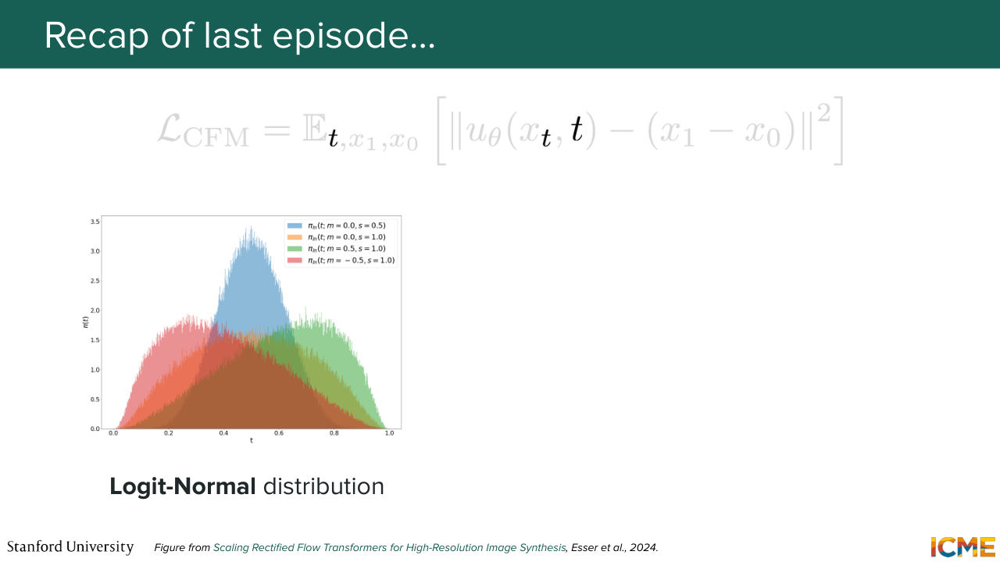
0:35 So that's why this lecture is going to be quite important. But before we start, as usual, we're going to recap what we saw last time. So if you remember, last time we focused on the training lifecycle of text-to-image generation models. And we first started by focusing on the loss that we're using for training, and in particular, we
1:02 looked at the time step t that up until then we assume to be drawn from a uniform distribution. And we saw that it was actually not fair to treat all time steps equally. And we saw that there was a distribution that was quite nice in this case, which was the logit normal distribution, which emphasized on the middle steps, which are harder
1:31 to learn compared to the earlier and the later steps. And this is mainly because early on, you have basically no information on which for you to base your prediction, so you just predict the mean of where all the observations are. And then towards the end, you have almost denoised your whole image, but in the middle, you're figuring out where to go and how you want to take those big decisions.
2:02 So we not only saw this, but we also saw that for a given noise level, if you have a higher resolution image, then you perceived noise is going to be less than a lower resolution image, which is the reason why you need to do what we call a timeout step shift.
2:25 And we saw this formula, which hopefully is not that haunting right now, which is something that
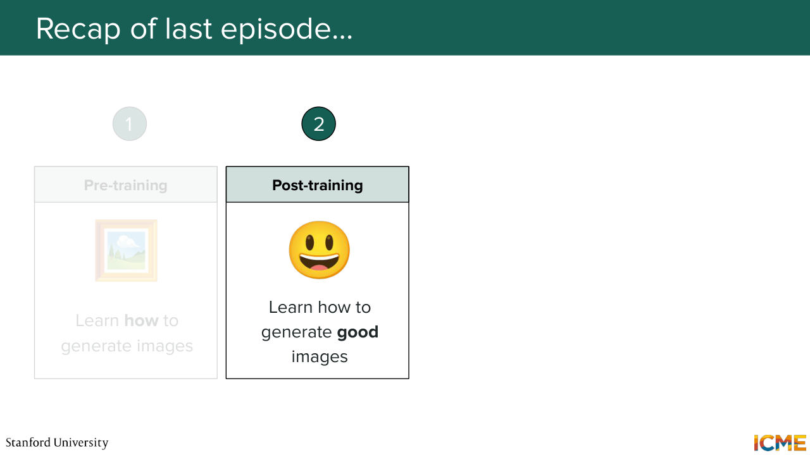
2:30 is derived by our uncertainty of what the underlying pixel value is. And then what we did was go through the whole training life cycle of text-to-image generation models, and we started with pre-training, where our goal was to teach our model how to generate images. So we saw curriculum learning, where
2:58 the goal was to teach our model first, how to do the easy things before doing the harder things. And then what we did was also look at how we can handle different resolutions. And we saw that given that we have a DIT-based model, it's only a matter of having a longer input at the end of the day. Then we looked at post-training approaches
3:26 aimed at getting you to generate more beautiful images. And here, we saw two main strategies on the supervised side, which was continued training, focusing
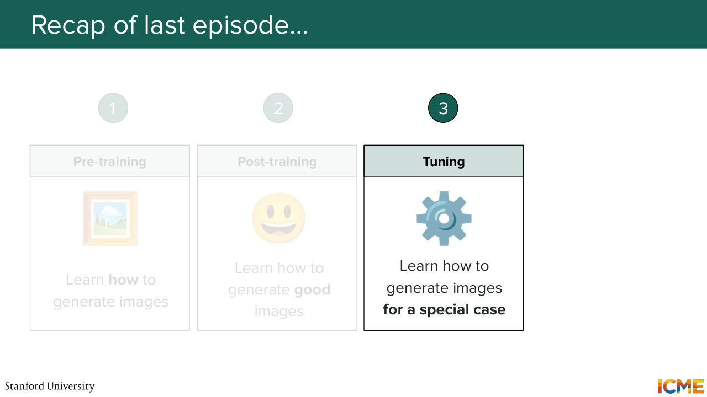
3:41 on acquiring more knowledge, which is more relevant to the domain you want to use your model. And then supervised fine tuning, which is aimed at just improving the aesthetics of the images that you produce. And we also saw some preference tuning methods, which were aimed at capturing negative user signals because up
4:06 until then, we only taught our model what to do, but not what to not do. So this is the goal of techniques that are derived from JRPO, DPO, and so on. And after that, we saw how we could personalize our text to image generation model. And we looked at DreamBooth, which is one such method, which
4:34 aims at relying on a rare token and training your model on the specific object or person that you want to capture, and then
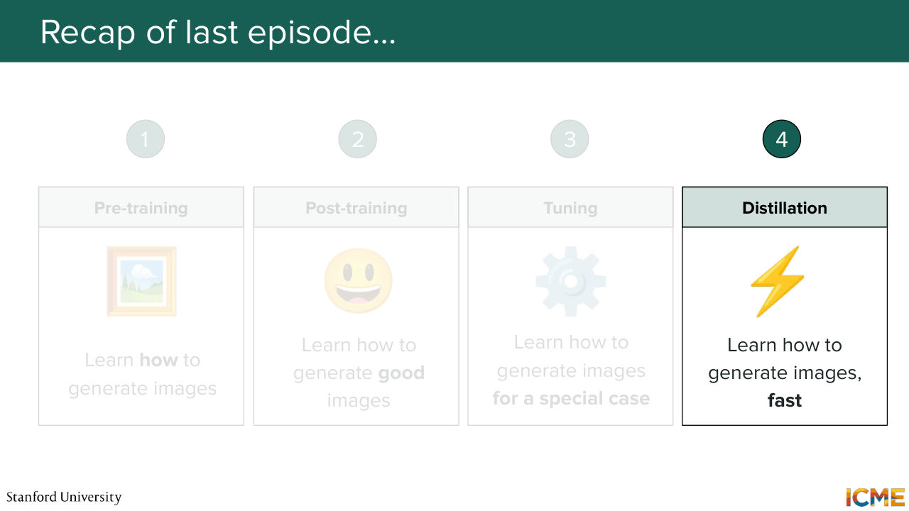
4:46 use that tuned model at inference time to be able to leverage what you have learned at training time. And then finally, we saw a range of distillation methods, which were aimed at shortening the number of steps that were needed at inference time, so we saw progressive distillation. We saw distribution matching distillation, and here we are.
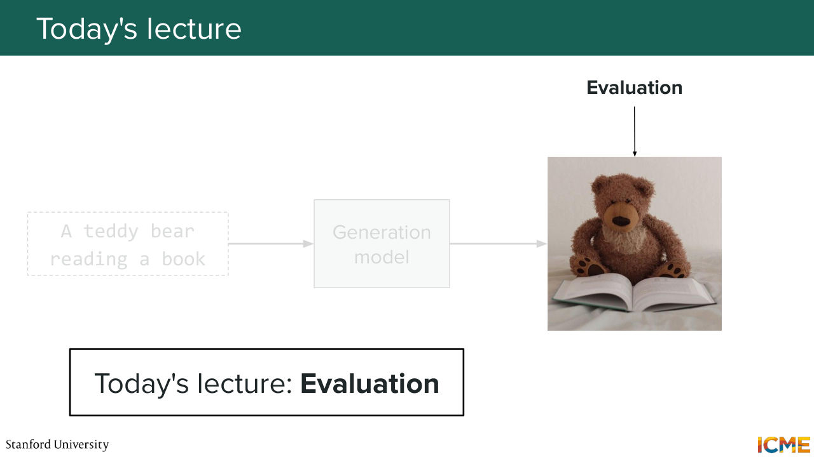
5:22 Today, we're going to focus on evaluation, which as I mentioned, is going to be
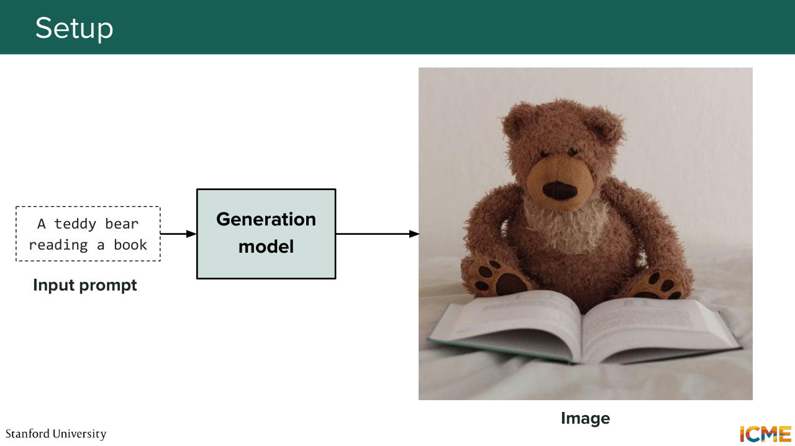
5:27 about assessing how good of a quality
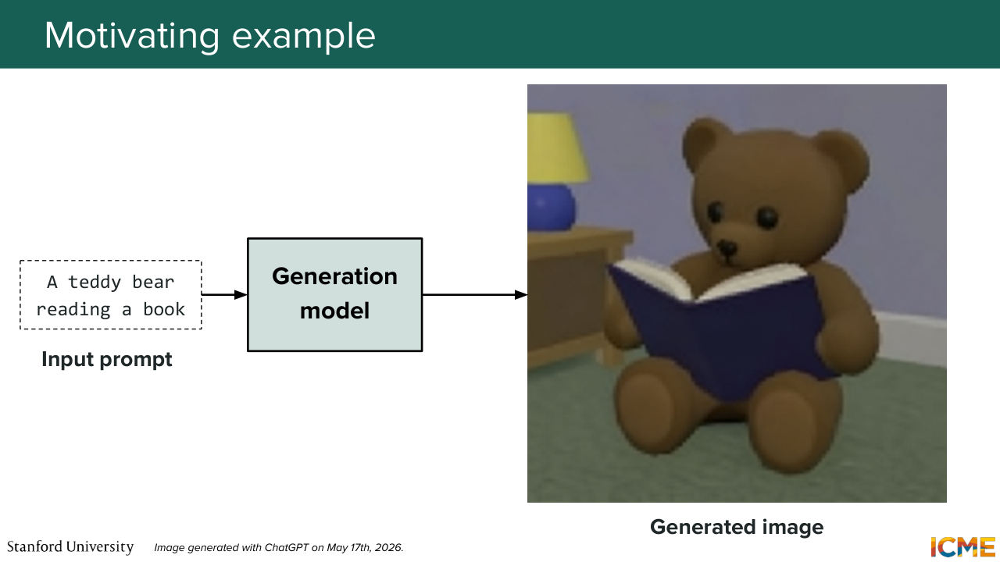
5:32 the output generated image is. So as you can maybe think, judging of the quality of an image can be quite subjective, so I want us to start with a motivating example. And I would like to ask you, based on an input prompt that I'm going to read, which hopefully, is familiar by now, whether you think that image is a good image or not.
6:06 So the input prompt is a teddy bear reading a book. And here is the generated image. So the question is, do you think that this generated image is a good, or bad output? So who says good? Who says bad?
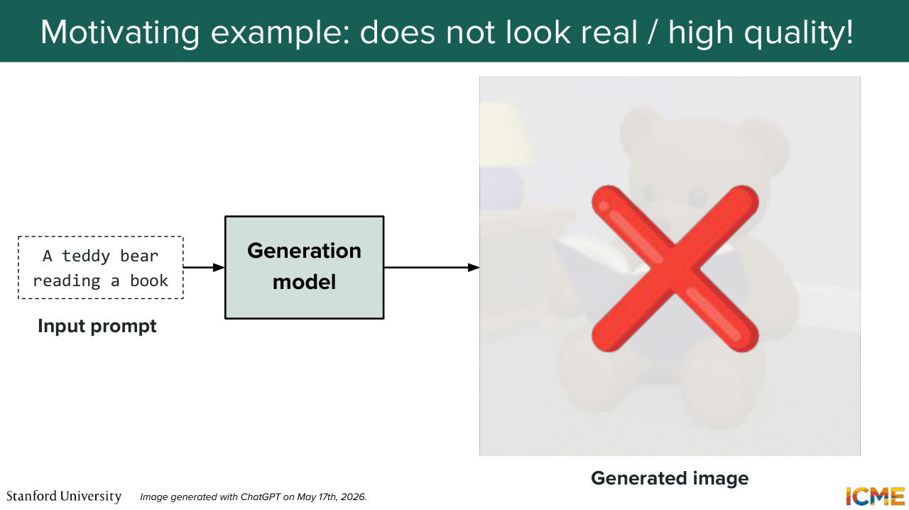
6:31 We agree it's an output that is not very pleasing to see, and the main reason here is well, the aesthetics are not great. You look at the image, it doesn't look great. OK, so how about this one? Do you think that this image is a good image?
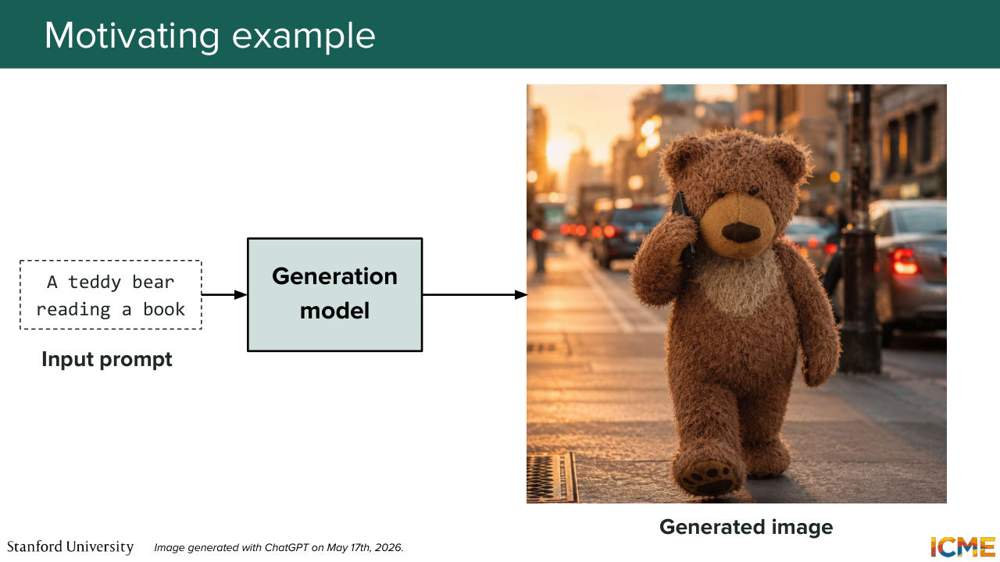
6:56 Who says it's a good image? Bad image? Yeah, so why is it a bad image?
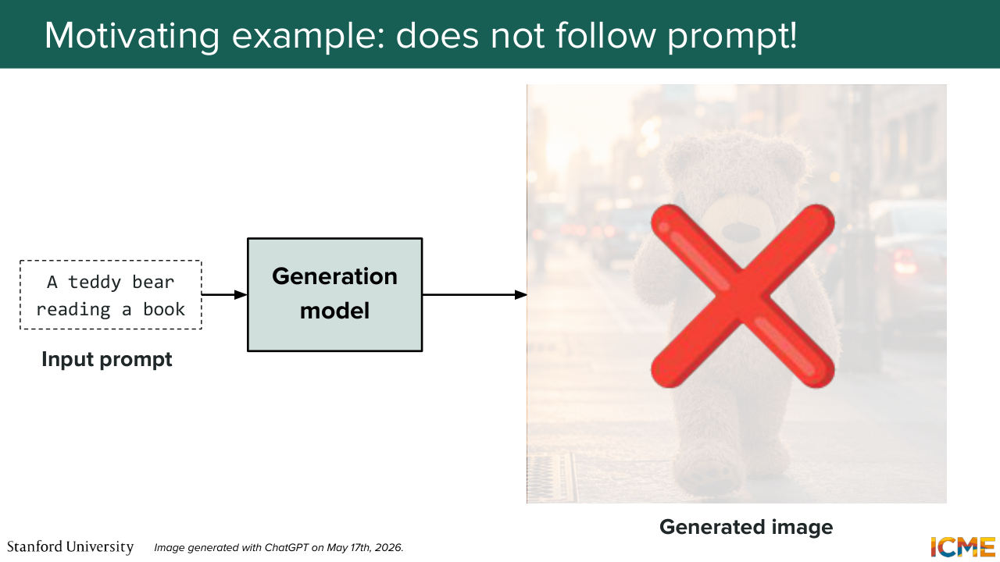
7:05 Yeah, so it's indeed not representing the prompt. I agree with you, so it's something that we call prompt adherence, where we want the output to follow what we have it as input. And so here, although this image is great to look at,
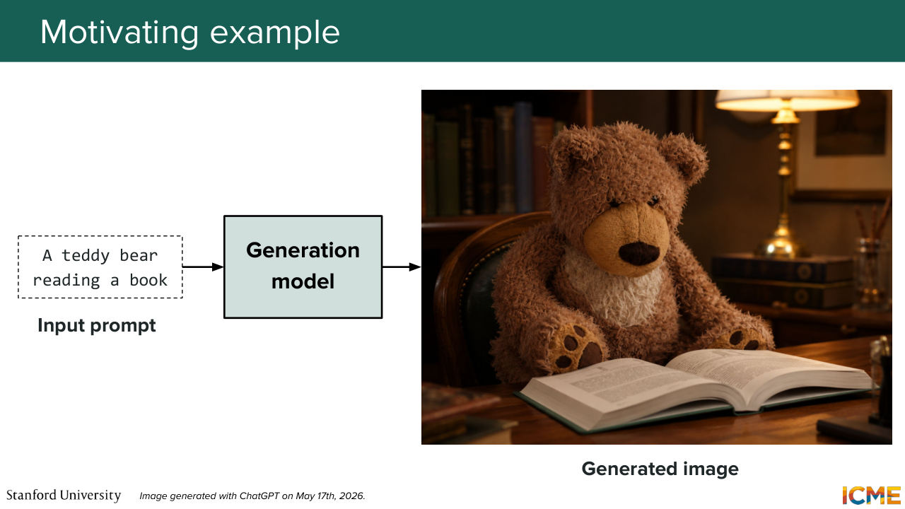
7:23 well, it's not about a teddy bear reading a book. Last one. Is this image a good image or not? So who says good image? Bad image? So why is it a bad image?
7:48 So you have a very refined taste, which is great. So let's suppose that this images is good enough for us because here, first it's following the prompt, so it's a teddy bear reading a book. And then second, let's say it's more aesthetically pleasing compared to the other ones. So from this small scale exercise,
8:16 what I wanted to point out was that when we look at the outputs of a text-to-image generation model,
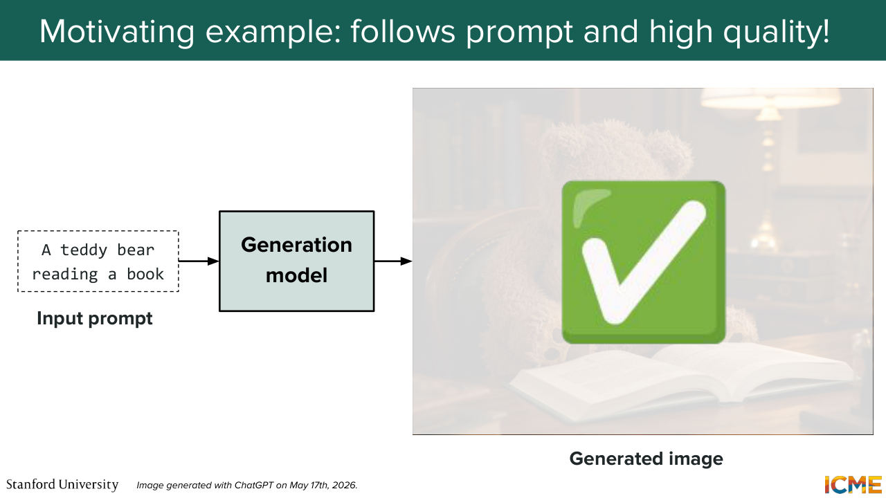
8:25 we typically look at things with respect to two main buckets.
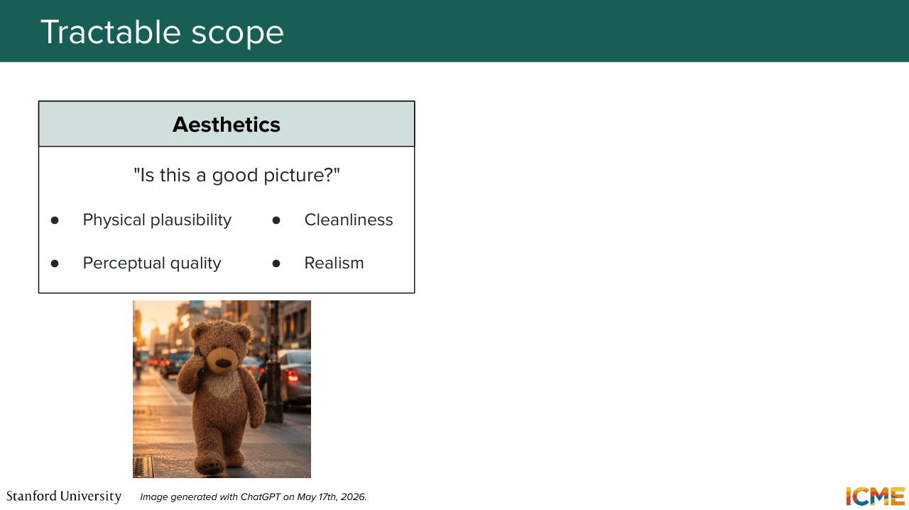
8:31 Not exhaustive, but two main buckets. The first one is, if you take this picture on its own,
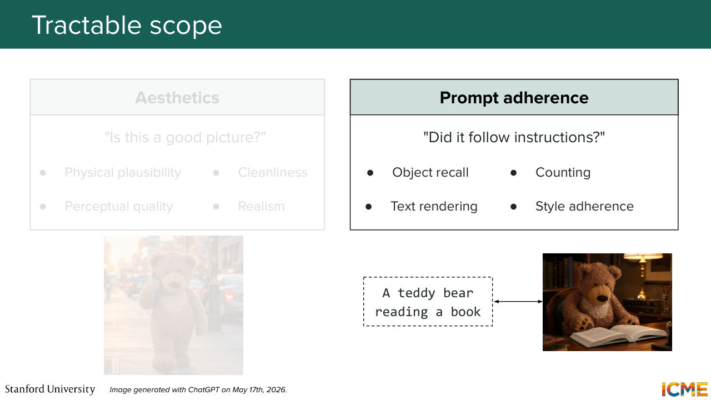
8:39 does this look like a good picture? An aesthetically pleasing picture? So here, you think about whether what is in there is physically plausible. So for instance, if the book that your teddy bear is reading is on the table and not floating, if it's realistic, if a perceptual quality is there. And then the second big bucket is whether the produced output is indeed following your inputs.
9:11 So here, it's called prompt adherence. And what we want to see is whether the objects, the people, the locations are indeed present in the image, and we want the image to be of a given style. And if, for instance, I say, it's
9:32 reading a book about the CME 296 class, I want CME 296 to be on the book, so all of that would be within that bucket. But I mentioned that these two categories are not exhaustive. Of course, you have a bunch of other criteria that you can think of, so I'll just name a few. So the first one is safety, so you want to make sure you're not depicting things that are
10:01 interpreted in a unsafe way. You want to make sure that if you generate something based on a prompt, you're not always generating the same thing, so you want something that is a bit diverse. You don't want to memorize the things that you have seen as inputs, and so here, it's
10:27 trying to have some generalization capabilities for your model. And then you have a bunch of other dimensions, so here, for instance, the bias. You don't want your model to always output the same outputs, which could be, again, misinterpreted. So for all these reasons, what I propose is that this image evaluation problem,
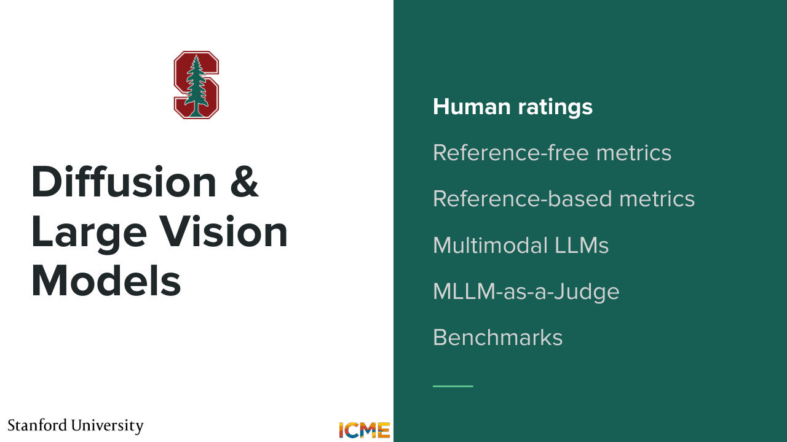
10:57 we can think of it as us trying to think if the image that we're getting as output is mainly good along these two dimensions, which are aesthetics and prompt adherence. So let's assume that these are our two main categories that we care about. And with that, I would like to start
11:23 with a very simple and natural way of evaluating your output, which is to leverage humans. So here, the idea is you have your model, you have some input prompt that is having your model generate an image, and what you're saying is OK, given this prompt, given this image, how would you rate this image?
11:55 So here, one possible option is to have a scale from 1 to 5, where 1 is very bad and 5 is very good. And the idea is to figure out where your image falls into. So in this case, let's assume it's very good. Then what you would do is in order to measure the performance of your model across a data set,
12:27 you would take the average of the ratings, so you would do sum of the ratings, over the number of ratings, which you can call average rating. So the good thing with this score is it is nuanced, because you have a way to distinguish a very good image versus a good image, but not a great image and so on.
12:54 But the main drawback there is, given that you're letting more degrees of freedom for humans to decide on which rating that is, it can introduce some noise in the ratings that you're getting, because humans may think that an image is a 5, but someone else can think it's a 4.
13:19 Someone else can think it's a three. So everyone has their own way of interpreting the scale, and so this can introduce some noise in the ratings. And also, if you think about it for a lot of problems, it's actually very hard as a person to say if something is a 4 versus a 5. It's just a hard problem.
13:45 And so for that reason, a second method of digging into this issue is instead of having a 1 to 5 scale, to reduce this problem into a binary problem, which is much easier for humans to handle, because here, you are given an image, and you just need to say whether it's good or bad. So here, we assume that the answer is good.
14:16 And so the score that we can think of in this setting is, again, taking the sum of the ratings, over the number of ratings. And here, it would be the pass rate. So how many of your images are what is the proportion of your images that is actually passing the bar? So the good thing here is, it is an easier task for humans to work on, so the ratings
14:46 are less noisy in that sense. But one problem is humans, although it's on a binary scale, they have a hard time evaluating things on an absolute scale. So it's easier for you to, let's say, compare two things, as opposed to saying whether that something is passing the bar or not because you need to have some reference.
15:16 So for that reason, I want to propose a third method of going about doing this, which is trying to rate those images by comparing them to some other images. So here, it's the pairwise comparison setting. And the setup would be you have your input prompts, and what you do is you generate two images. And your task is to say which one of these images
15:50 is better than the other one? So do you agree with me that this task is easier than the absolute scale task? So in this case, you agree that the left one is a better image than the right one? So I'm glad you said no for the other one, because this illustrates the point that on an absolute scale,
16:16 people have different expectations. So they may think that the left one may not be above the bar, but when you compare these two images, it is just obvious that the left one is better than the right one. And so in that sense, the ratings that you're getting are going to be even less noisy compared to the absolute scale, binary one. So how about the metric?
16:45 So very naively, a very natural way would be to just, for a given model, count the number of wins, and divide it by the number of times it was compared to something else. So this one is the win rate. Do you think that's a good metric? So here, what we're doing is for each model,
17:19 we're generating outputs, and we're comparing these outputs to, let's say, outputs of another model. What we're saying is, in order to quantify the performance of that first model, the model a, what we're doing is, we're counting the number of times images produced by this model won over the opponent, and we divide that by the number of comparisons.
17:47 So the question is, do you think that is a good way of doing things? So the answer is, so for one reference OK, but for many not sure. Well, you have the right intuition here. So what I want to say here is winning against a model that is known to be excellent is much harder than winning against a model that is known to be bad. So our intuition here is your win proportion
18:25 should not be the only factor here. You should also consider who you are comparing yourself with, and it's exactly what you mentioned. And I'm not sure if you're tracking the performance of text-to-image generation models, but typically, you have something like this. You have a leaderboard, where you have models that are ranked. And one challenge with this setting is that models they come, but also they can go.
18:57 So when a model comes, let's suppose you want to have a win rate that is reflective of the performance of that model, you will need to have the same model be evaluated against all models of that list. And you want all models of that list to be also evaluated against all other models of that list
19:25 every time the list gets updated, so this is a lot of evaluations. So you don't want to always have to evaluate everyone against everyone every time something gets updated on the list to make things apple to apple.
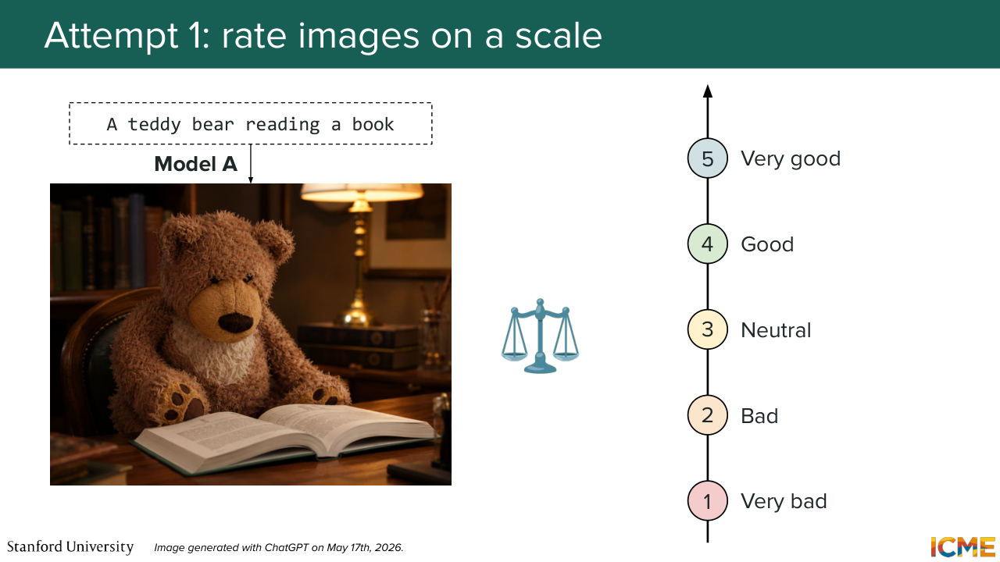
19:43 So for that reason, well, something that we can think of is to adjust that win rate metric
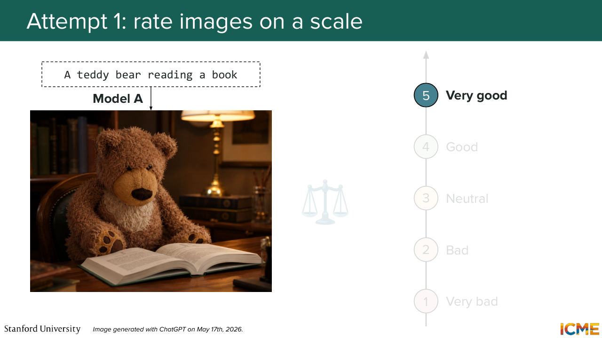
19:53 by taking into consideration how strong your opponent is
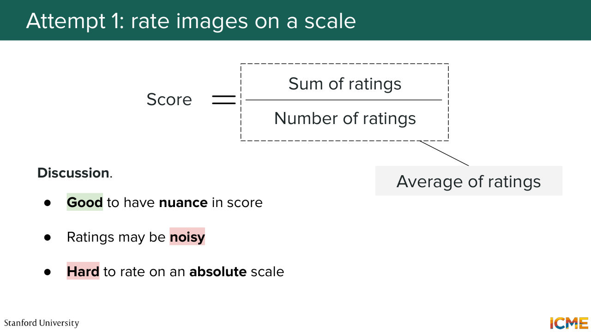
19:59 within the metric. So how do we want to do that?
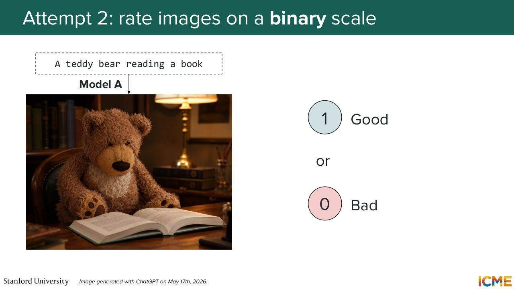
20:04 Well, before we go into exactly how we do that, I just want to illustrate the point
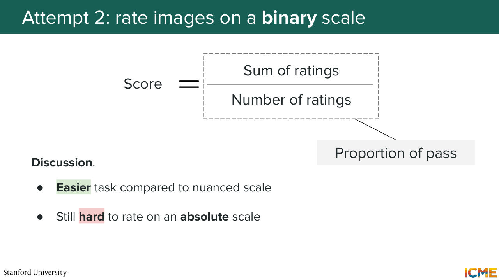
20:10 I mentioned. So here, let's imagine we have our model, let's say model A, that we want to evaluate against other models.
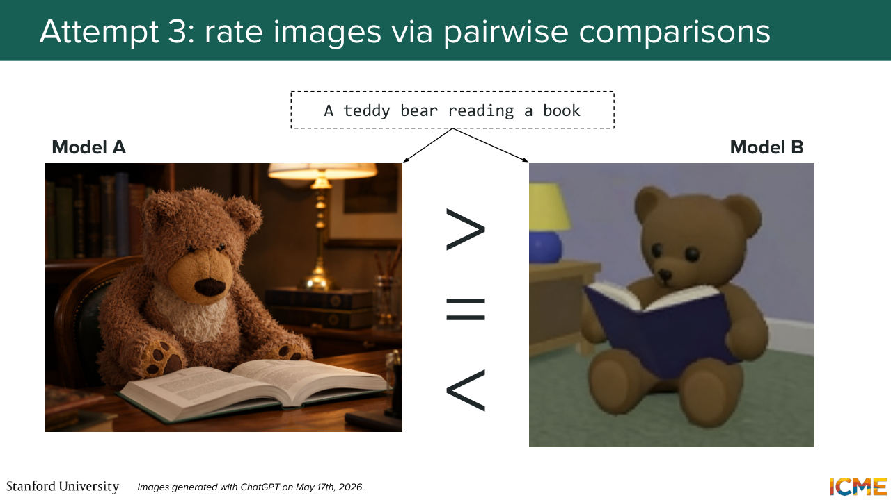
20:19 Well, if our model wins against a bad model,
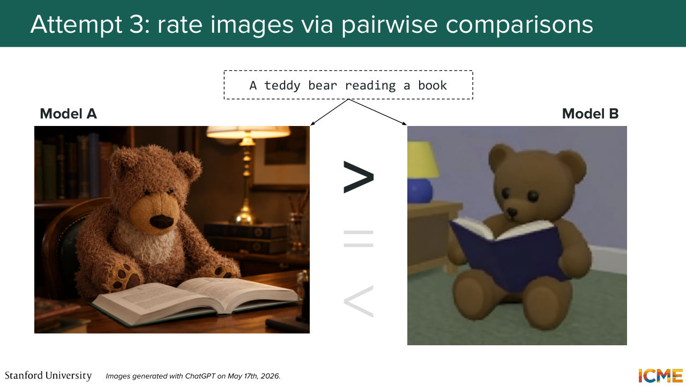
20:25 your reaction is OK, and so what? You already that it's better than that very basic model,
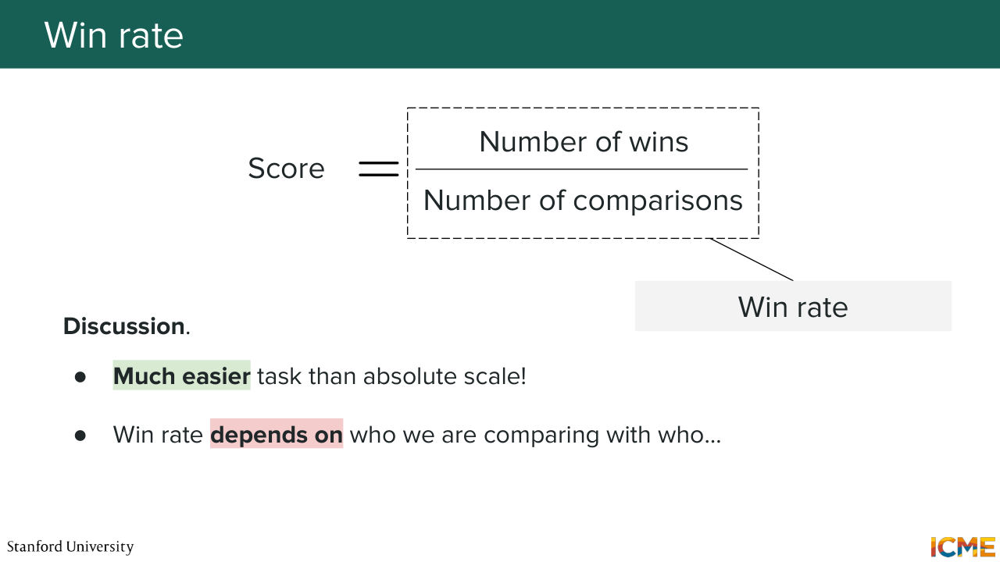
20:32 so there's nothing to be surprised about. But if the human says your model is winning against another model that is much, much stronger, then your reaction will be different. So the idea is to capture that within the metric,
20:51 so let's see how we want to do that. So first of all, let's assume that we have a metric per model
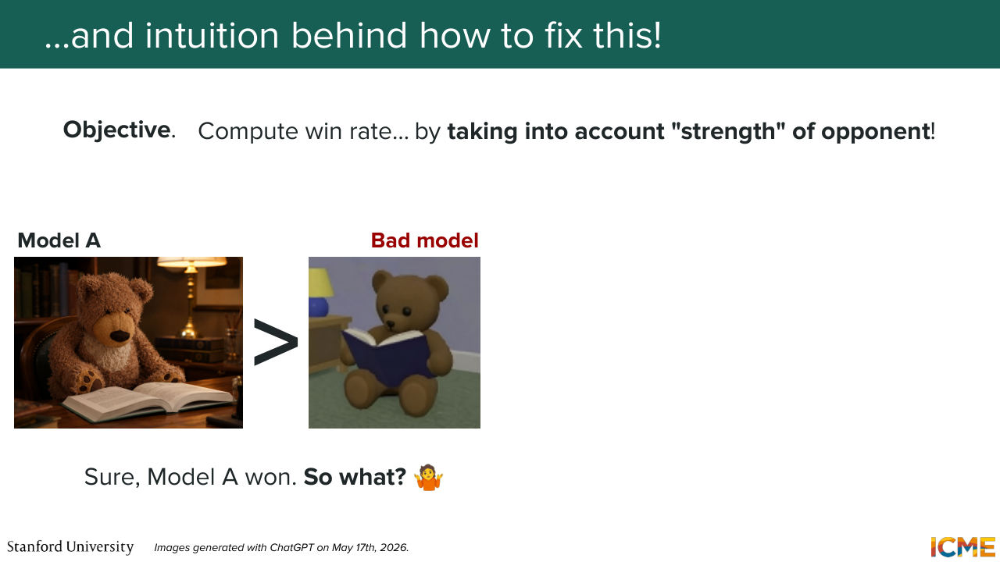
21:01 that we note R. R as in rating. And let's assume that our model, model A starts with a rating
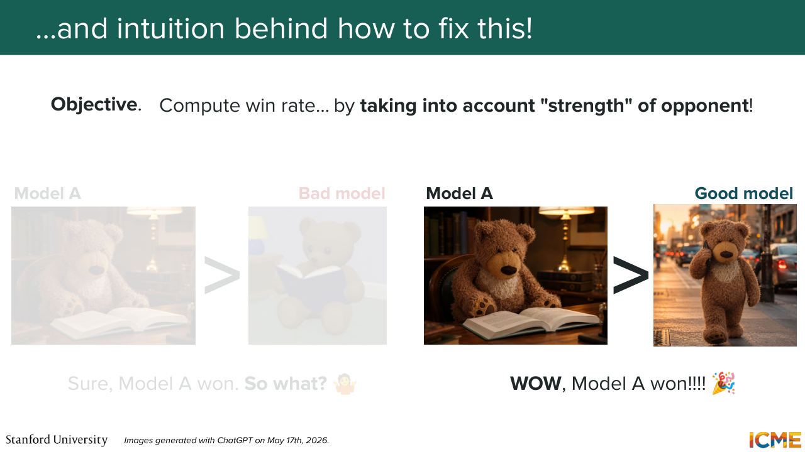
21:09 of, let's say, 1,000. And we're a newcomer, and in that leaderboard,
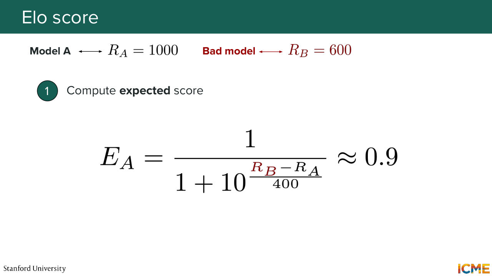
21:15 it just happens that there is a model, let's suppose it's a bad model, that has a worse rating, which is 600, let's say. So let's have our model A be compared against that bad model. How would we want to update the score? So one idea could be to compute the score that we think would happen, if those models that perform
21:50 like they did in the past. So let's compute the expected score, and for that, let's just use this formula, which gives us the expected score. And so here the formula would be 1 over 1 plus 10 to the power of the rating of the model that you're competing against, minus your rating,
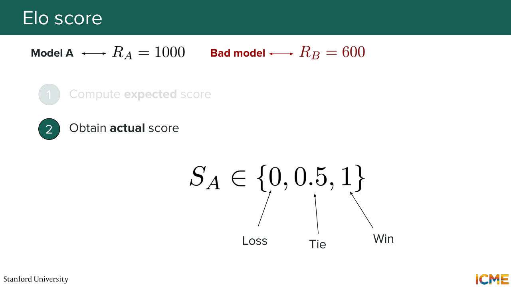
22:13 over some arbitrary constants. And let's assume that constant is 400.
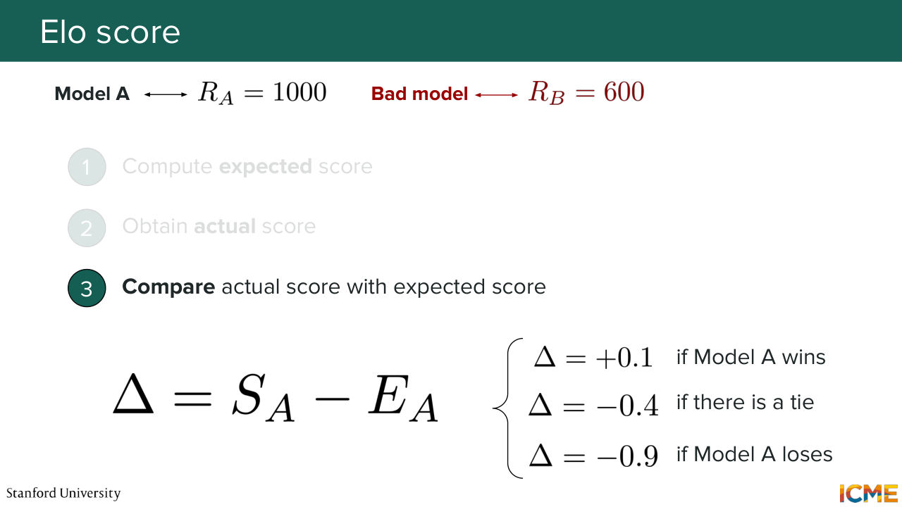
22:20 Then this quantity would be your expected winning chance. And so here, it's 0.9, so 90% chance of winning. So now that you have your baseline, what you want to do is compute your actual score. So actually, compare the two models. So here, the outcome can be one of three things,
22:47 so you can either lose, be tied, or win over the bad model. And the idea is to use these two quantities, so the expected score and the actual score to compute your element of surprise, how much you went above, or how much you went below. And here, it would be delta equal to the actual score that you obtained, minus the score
23:18 that you think you would have obtained on average. And here, in this case, if model A wins, it would be plus 0.1. If it loses, then it's minus 0.9, and if there's a tie it's also a minus, minus 0.4. So here, by the way, the numbers they just come from this formula that we just plug the ratings into that
23:49 and then we compute delta. So the good thing with this observation is we see that if we have our model win against the bad model, well, there is not a lot of gains, which is aligned with our intuition. And if the model loses, then it means it's really, really bad, so there is a big downward contribution.
24:16 And even if there is a tie, we know that if we're tied with a very bad model, then that's also a bad contribution for our rating,
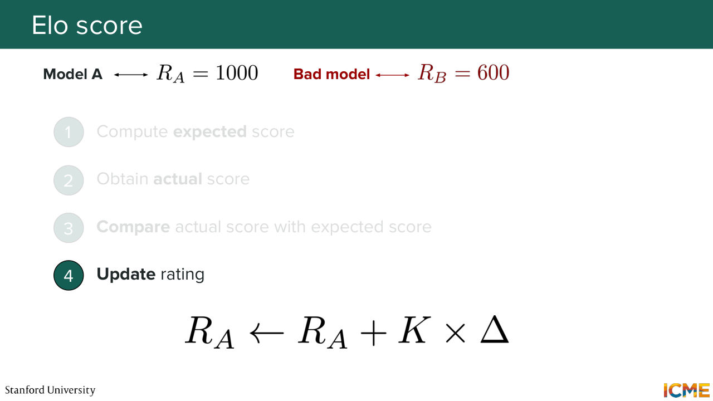
24:26 so the first step would be to just update our rating by adding k times delta. So that would be the recipe. And so the image that I showed you a few slides ago was actually this slide, where I masked the middle columns. So this is how the leaderboards do it.
24:53 In practice, they compute the score. So maybe you may have heard this score. It's called the Elo rating, and it allows you to track the performance of a model by computing the score as a function of how strong your opponent is. And this allows you to avoid having everyone be evaluated against everyone every time there is a change in who's in the leaderboard.
25:25 And by the way, Elo is actually the name of the person who came up with the method. It's not an acronym. So that's good to note. But what are the problems with this approach?
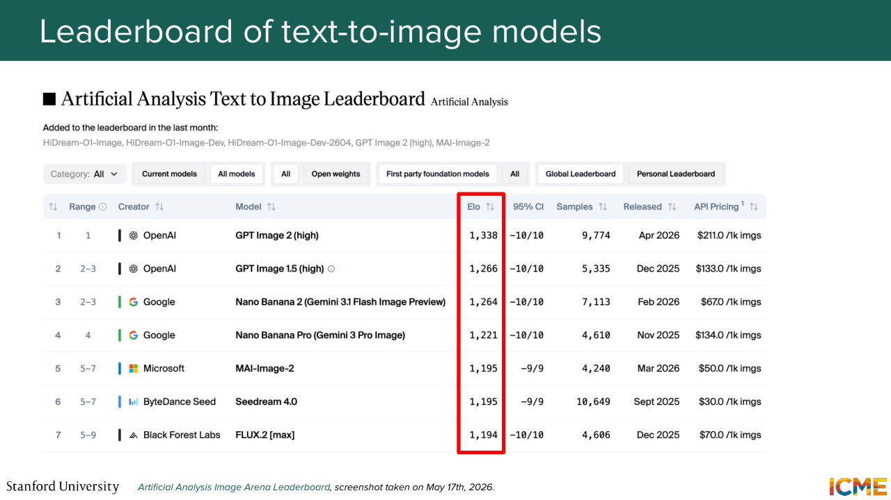
25:39 Well, every time we want to evaluate our model, if we had to always involve humans,
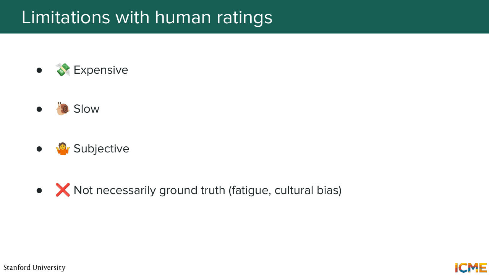
25:47 well, it will be a very expensive task. So that's the first limitation. Also, humans, there's only 24 hours in a day. It's a slow method. It can also be subjective, so the example that we had in the very beginning is one example of that. Another example can be try to tell me if this image is well lit. There are several notions of something being well lit.
26:16 So again, it's a subjective task, so answers can differ. And, of course, humans are not perfect either.
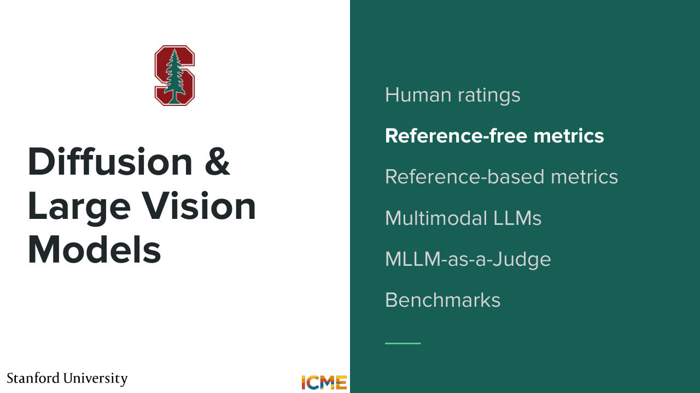
26:25 Depending on the time of the day, you may have external circumstances that may also influence on the quality of your ratings. So all of that is I hope, a motivation for us to look at automated metrics that would allow us to quantify
26:44 how good the outputs are. And we're going to start with what we call reference-free metrics, and I'm going to tell you in a second what reference-free means. So as I mentioned, we're in the text to image generation case.
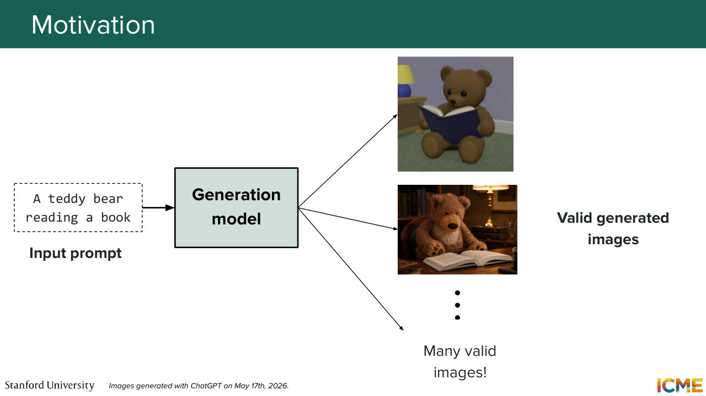
27:04 We have a text as input and we have a model that produces an image.
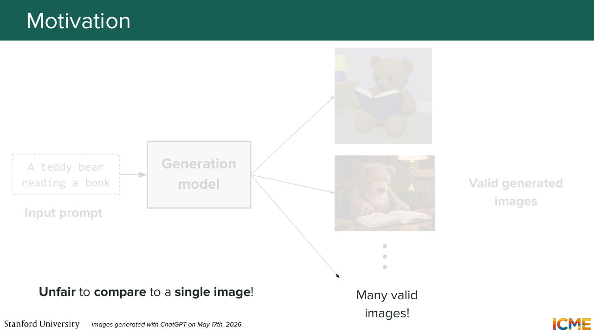
27:11 So one thing that I want to tell you is there are they're just multiple ways you can produce an image for a same prompt like these ones. And for that reason, having a single image as reference is a little bit unfair because you would always try to compare against that same reference.
27:40 That is not the only way you can do things, and so for that reasons, the metrics that we're going to see are called reference-free, as in they're not using a single output reference image as reference.
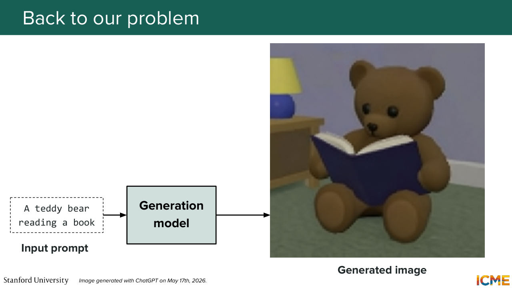
27:55 They're not doing that. So that's the reference-free. And so let's go back to our problem. And so here, we have an input, which is a text prompt,
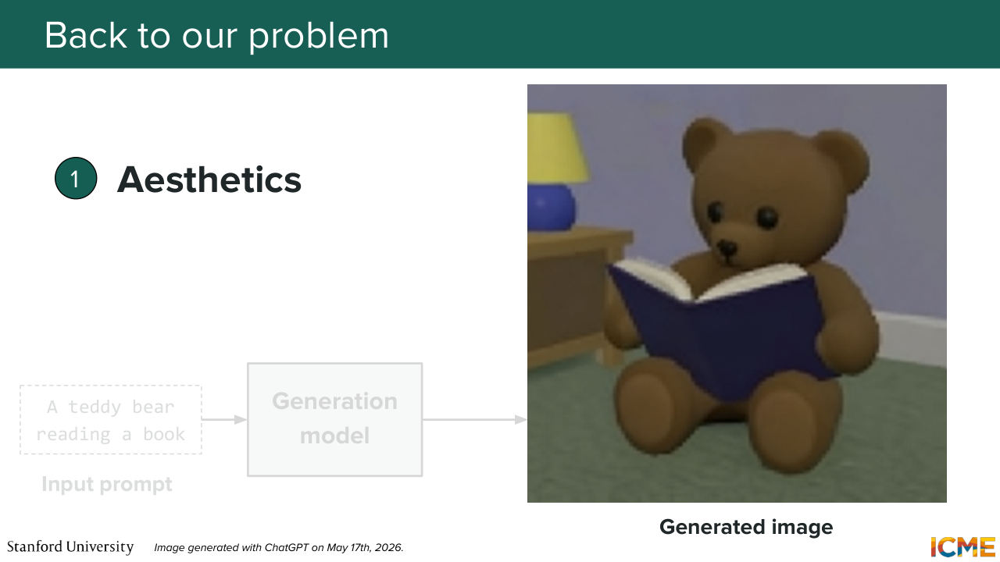
28:09 and then we have an image as output. And I told you we could consider our problem
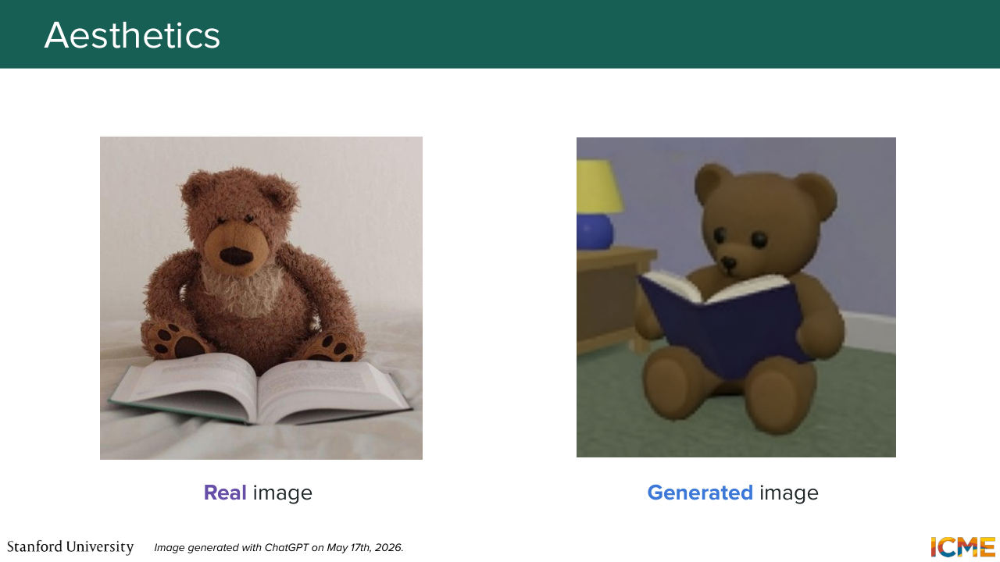
28:16 as being us trying to quantify how good the image is with respect to aesthetics and with respect to prompt adherence. Well, here, let's start with aesthetics. And let's take our generated image, which is on the right and our real image that is on the left. So as I mentioned, it is not fair for us to compare our generated image with a single reference.
28:47 So one idea can be to actually take many generated images
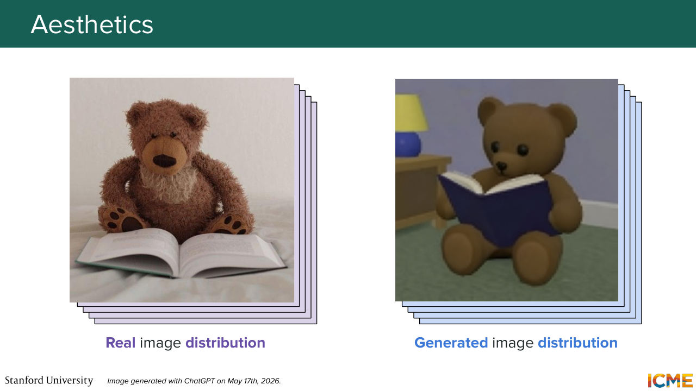
28:53 and many real images. And instead of comparing your single generated image
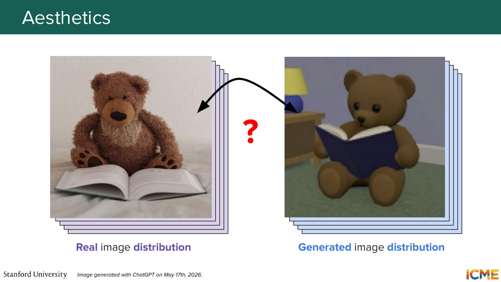
29:00 to the single real image, one idea could be to look at the distribution of both
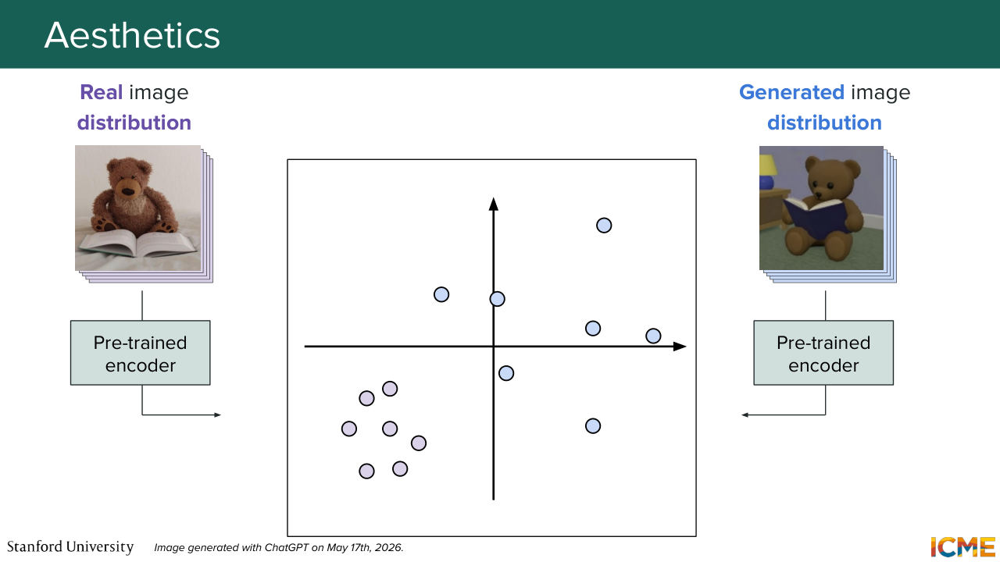
29:11 and see how the two compares. So let's do that.
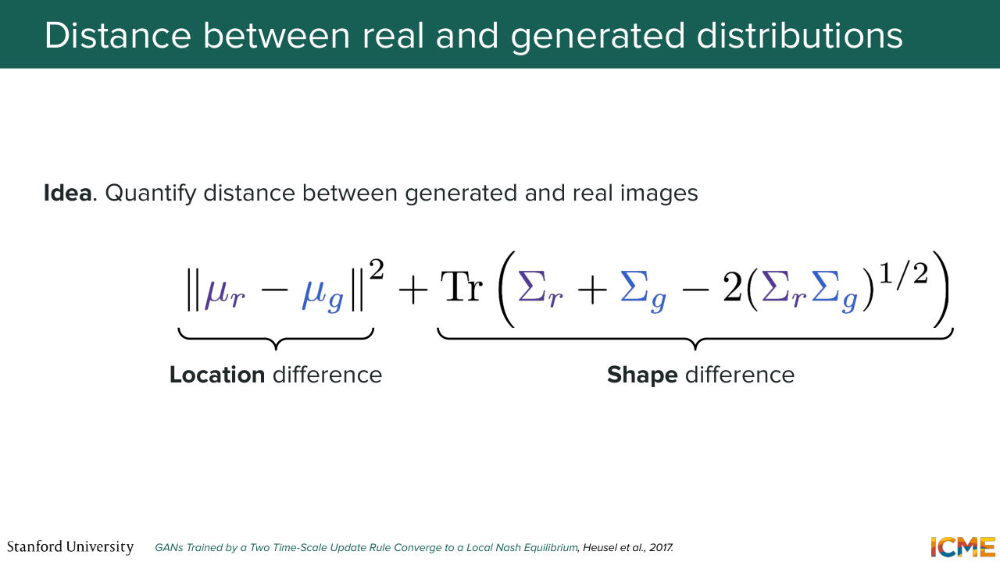
Shown briefly — discussed together with the adjacent slides.
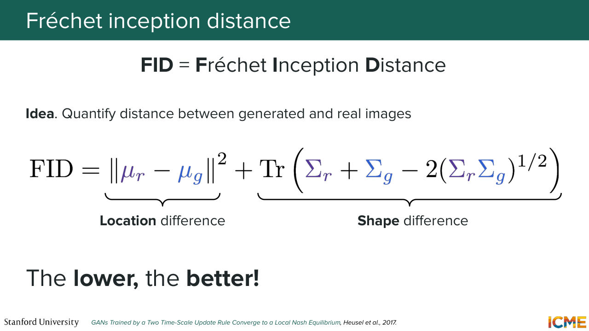
29:16 Well, how would you do it? Well, in the class, we've seen that we have methods to represent images in what we call a latent space, or some space. So here, one idea could be to take our, let's say, real images and have them be inputs into some encoder such that they can be represented in space. So we can do that with the sets of real images.
29:49 And in parallel, we can also take our generated images, and also let them through that pre-trained encoder so that they can also be represented in that same space. So the idea that we can have here is to try to compare how these two resulting distributions in this space, how these two compare.
30:17 So in order to characterize each distribution, you can have the mean, mu, and the covariance matrix sigma that can just tell you about how your distribution is shaped. And what you want to do is to compare the two. So you want to compare where they are located, so here, you can use the mean, and how they are shaped,
30:40 you can use the covariance sigma. So the covariance matrix is a quantity that tells you how spread out your distribution is, and also what are the directions of that spread. So by the way, why would you also want to quantify the spread? Well, you also want your generated images to be diverse,
31:08 and so here, the spread will be around quantifying how diverse your generated images are. And so, as I mentioned, what we want is to quantify the distance between these two distributions. And so we can come up with some formula, which I'm putting it on the slide. And we're going to go through each component, where
31:36 the first term is around quantifying the difference in where these distributions are located, so comparing the means of each distribution, and also comparing the shape of each of these distributions. So here, so Tr stands for trace, so it's an operation on a matrix.
32:01 And maybe it's the first time you're seeing this formula, your first reaction may be, well, where do you have this formula? What does it represent? So the truth is this metric, which is called the Fréchet Inception Distance, is a metric that is derived from a distance that is called the Wasserstein distance that aims at quantifying how much effort you would have to do to go from one distribution to another one.
32:35 And it just turns out that if you assume that the distribution of real images and the distribution of generated images, they are each Gaussian. If you assume that, then it just happens that this Wasserstein distance, which is something that typically does not have a closed form solution, is something that you can express in a closed form.
33:06 So that's where the formula comes from. But in terms of interpreting each term, you can think of the first term as being the difference in terms of location, and the second one is how the shapes differ. Cool. So it's a distance, so what you want is those distances to be as small as possible. So the lower your FID, the better it is.
33:35 So the question is, can you use VLM to do that? So we're going to see that later in this lecture. So the question is, can you say a little bit about how to interpret these terms and how this relates to these [INAUDIBLE] Gaussians? So we're not going to go into that, but the underlying idea behind this metric
34:02 is to quantify how much effort you would have to transport one distribution to another. And this is, you can think of it as some formula that has this interpretation. And what I was saying was, if you assume that the shape, or that your real image distribution, and if you assume that your generated image distribution, if you assume that each of them is Gaussian,
34:31 then what we're saying is that the quantity that I mentioned can actually be computed with a rather nice formula that is closed form. So this goes into the broader theme of Gaussian distributions, just simplifying a lot of things, and this is one of those instances. So the question is the real here is the data? Yes, so you would take a set of real images, so non-generated
35:00 images, and you would compute their representation using the pre-trained encoder. And you would use those representations to represent those real images. So the question is, can I use it in pixel space? So here's the thing. This metric is there for you to compare how well your model is doing compared to other models out there, so you need to have some space that is the same as what
35:32 the other ones have mentioned. And so here this metric is called Fréchet Inception Distance because actually the pre-trained encoder is the Inception network. And so what you want is, if you want to compare yourself with someone else, you necessarily need to take the same representation to make things comparable.
35:57 So the question is if your diffusion model is pixel space, is this still applicable? Yes, so what you would do is you have your real images that you go through a pre-trained model. Your Pixel space diffusion, no problem. You do your diffusion in pixel space and at the end, you get those generated images and you input them into that Inception model. And then you have your representation. Oh, yeah.
36:24 Good question. So the question is, are these conditioned on a particular prompt? So it's a great question. Well, you touch a great point, which is that you want your model to perform well on what you care about. So, for instance, you may care about generating faces, let's say, or generating some nature, some indoor scenes.
36:52 So depending on what your task is, you may want to compare your generated images with respect to a set of real images that are representative of the thing that you care about. So you have a number of data sets like ImageNet is one that's quite-- it's a classic one. And then you have, I believe, MS COCO, and so on.
37:20 And so you can think of the images that you generate as being conditioned by a set of prompts that are going to match what is there, so it can be either captions, or class conditions. So you have something that allows you to compare yourself to that distribution. And typically, you would use a data set that is aligned with your task of interest,
37:46 and that data set would contain the thing that you would use as inputs. Great question. Great question. So the question is, in practice, how large is the set of real images that you take? So typically, 50k. And actually, speaking of that, we've seen in lecture 5, I'm not sure if you remember, we had DIT,
38:13 which measured its performance on that FID 50k scale. So 50k here means that we have a set of 50,000 real images. So here, what you would do is generate 50,000 generated images and compare that distribution with the set of 50,000 real images.
38:36 But I've also seen 30,000. Typically, in the order of tens of thousands. So the question is, is it fair to use variance and mean to characterize the whole distribution? Is that roughly your-- oh yeah. So the question is, is it fair to assume that the shape and the distance is representative of quality? So it's a great question.
39:03 Actually, one funny thing is, if you look at social media, I would say, every week, you would see a new paper coming up with a new metric. So this metric is by far not a perfect metric, and the community voices that out, for sure. So yeah, I agree with you. It is not necessarily indicative of the quality that you want to reach, but it's a good enough proxy,
39:30 or, at least, that's what the community thinks. And I would say, so it's a personal take. One of the reasons why it's been hard to change the metric that people use is because when you want to publish a paper, typically you want to show that your method is good, so you want to compare yourself to some previous method. And its people have just been using FID. So that's why it's really hard to change from that.
40:00 But I agree with your point, which it is not necessarily reflective of the quality of your images, which is why in papers, you would also see a bunch cherry picked or not cherry picked images that are shown in the paper just to show how good the model is. Cool. Great. So I'm looking at the time. I will move ahead, and just say that if there's
40:33 a big gap in the location, you can think of it as maybe the quality or the style being different. And when it comes to the shape being different, for instance, the generated images is in a very constrained region, maybe your model is not generating diverse sets. So these are the points to watch out for. And in terms of the sample size, so as we mentioned,
41:02 the typical reference is FID-50k of a given data set. And, of course, so we're looking at FID, which is part of this section of reference-free metrics, and here we're using a reference distribution. So I know that it may sound confusing, but I just want you to know that reference-free, the title of this section, refers to us not comparing one generated output with one
41:34 real image. It is more about comparing the distribution. And then the last thing is, one of the main complaints of people is that the distribution of real images and the distribution of generated images, they are typically not Gaussian, so this formula is typically not 100% valid. So the question is this formula only for Gaussians? So the formula is actually derived
42:06 from this other quantity that's called the Wasserstein distance. And so this formula is specifically when you compare two distributions that are Gaussians. And so that's another limitation, and a point that you will see in papers when they're OK, FID is not that great of a metric.
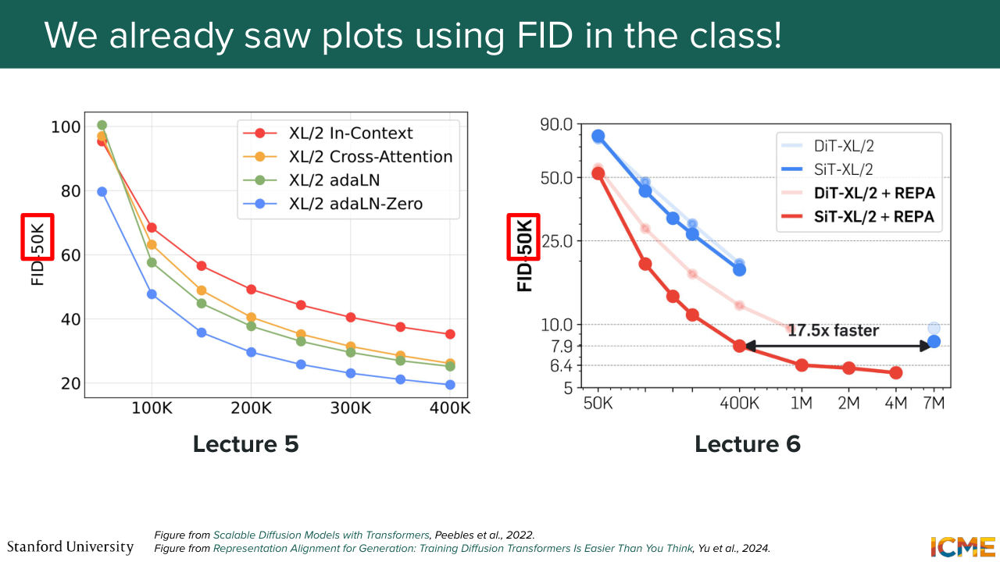
Shown briefly — discussed together with the adjacent slides.
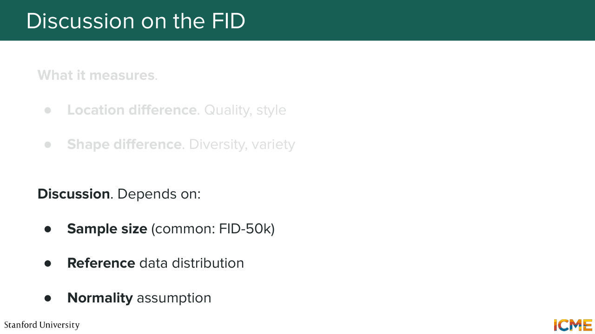
42:30 Cool, so this is the aesthetics. So FID is the metric that most people use, for better or worse,
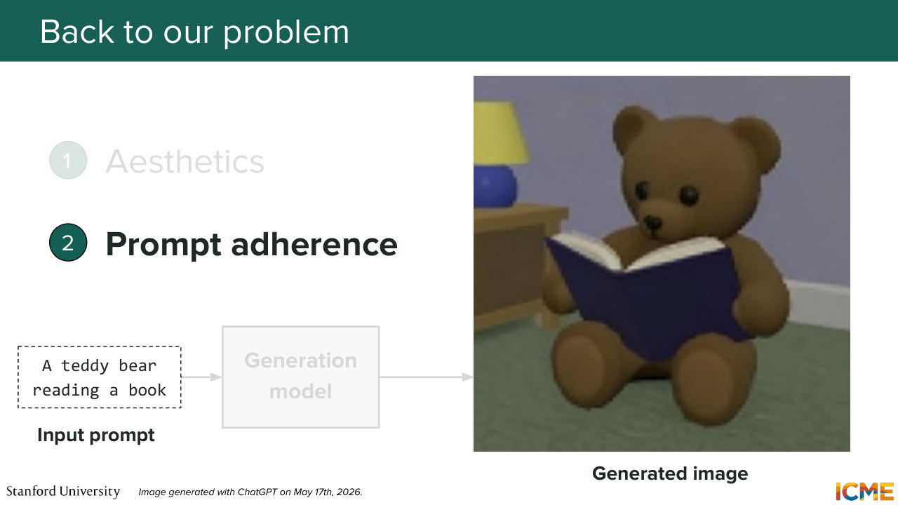
42:38 to quantify how good of a quality your generated images are. And second, as previously mentioned, we're going to look at prompt adherence. How can we, or how can we quantify that the output image that we're getting
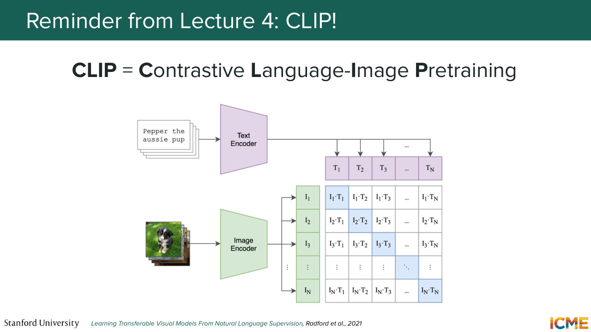
42:55 is aligned with the input? And so for this, actually, you may have in mind a method we saw in lecture 4 CLIP, which stands for Contrastive Language-Image Pre-training, which aimed at comparing the text and an image by encoding each separately through their respective encoders and training the resulting system using
43:29 a contrastive loss that incentivizes elements that are similar to have a higher score, and elements that are not similar to have a lower score. So you could very well use that model, where you would put the input text that you use to generate the image along with the generated image.
43:54 And there is a model out there that's called the CLIP score. That is actually exactly that CLIP model, that allows you to get an actual score in terms of how aligned your text and your image are. That's called the CLIP score. And speaking of taking into consideration both the prompt
44:19 and the image, you can also think of doing so
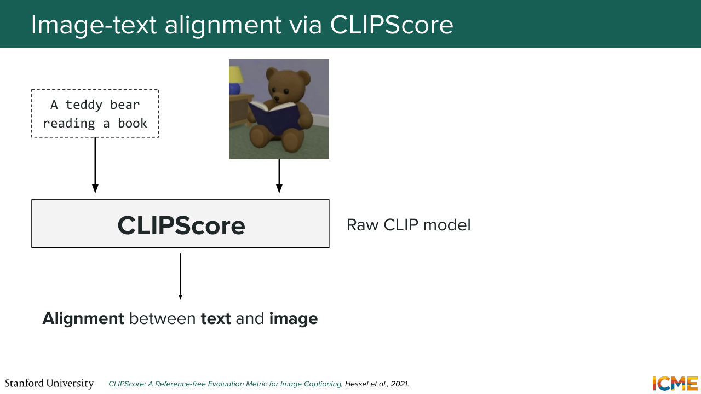
44:24 using a CLIP like model. Not in order to predict how aligned the two are, but maybe
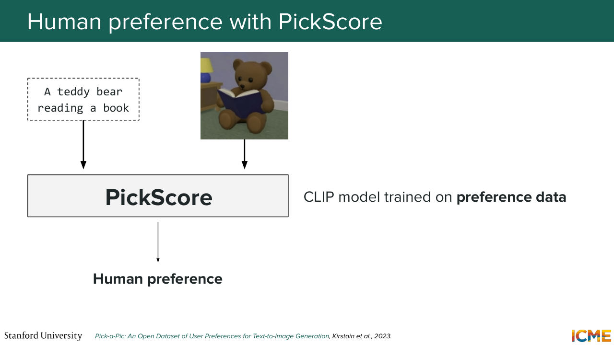
44:33 to align, or maybe to predict how good the image is to the input text. So you could very well take such a model and train it on a data set that is around human preferences,
44:51 and that's what people did. So this is the PickScore. So what they did was they took a CLIP model and they trained it on preference data, where you had image and text and the label was the preference. And here, you can get a PickScore, which is a holistic score that combines both the aesthetics and the prompt adherence, along with some other things to tell you
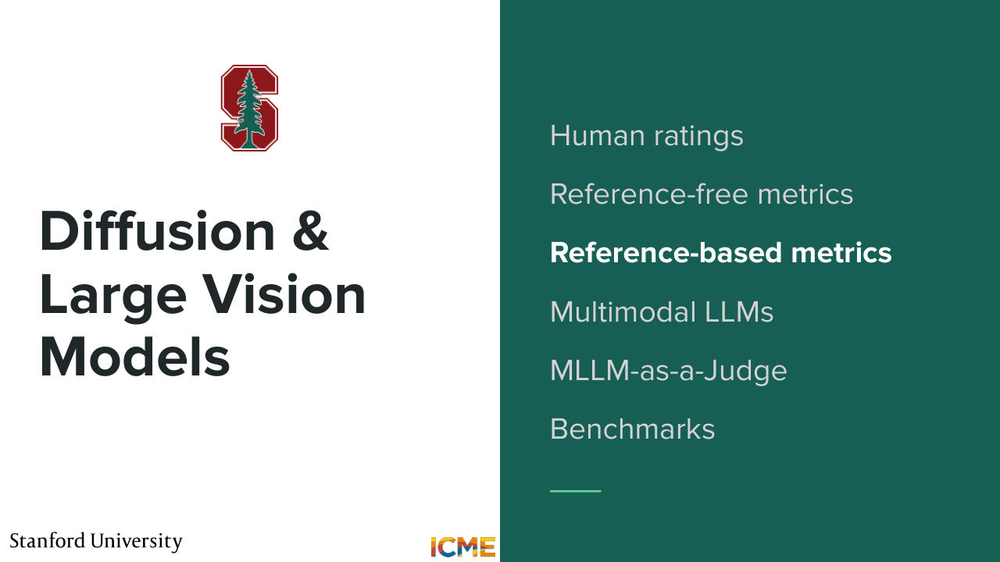
45:21 about the overall satisfaction of the human with respect to the generated output. So this is the last metric I wanted to talk to you about.
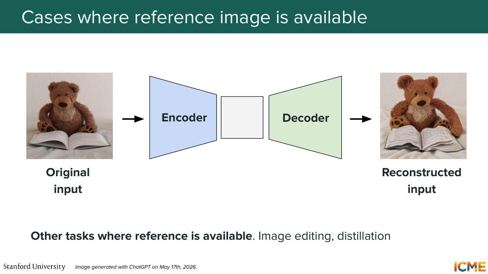
45:35 Now, I want us to take a step back. When we talk about evaluation, we may think about the image
45:47 generation model, but as we saw, it's not actually the only model we're interested in. We've also seen other pieces that do matter. For instance, the VAE, which is tasked with reconstructing the input. And in this setting, well, your label is much, much clearer
46:15 because what you want to do, your proxy task is to reconstruct the original input. And so in that sense, you do have a reference to base yourself on, so you could very well, in this setting, want to compare what you output with what you want it to output. And this is the reason why in this section, we're going to go through such metrics, which we're calling
46:45 reference-based as opposed to reference-free, because reference-based metrics have something that you can use to compare your generated image against. So I mentioned the VAE, but you have actually other use cases as well. So we've not really gone into details about text image to image tasks, so image editing tasks, but you may also want to compare how your edited image is
47:22 with respect to the input image, to make sure you're controlling for things that you don't want to edit, and so on.
47:28 So this is not just something that is valid for VAEs, but for other use cases as well. Cool, so just getting a bit more rigorous about our notations. So the input is noted x. The outputs, which is an attempt at reconstructing the input is called, or is noted x hat.
47:55 And what you want is to have a quantified metric to compare the two that hopefully, will align with the quality of your reconstruction.
48:08 So the first metric that you may think about, I mean, the formula looks scary, but it's just about comparing pixels-- just pixel-wise distance. And you may also that distance under the name MSE, which stands for Mean Squared Error. And so this metric, what it does is it takes these two images
48:35 and it just computes the pixel-wise distance of a given pixel in the reference image and the pixel in your generated image. And it does that for all pixels. And one big drawback is it is very sensitive to exactly
48:56 the alignment between these two images, and so if you have generated a perfect reconstruction, but that is slightly shifted a few pixels, let's say to the right, then your MSC will be actually terrible. So that's one drawback. The second drawback is if we tell you about an MSC, let's say it's 10, I don't know. Well, you don't what to do with that number
49:25 because it depends how you encode your pixels. So sometimes it is between 0 and 1. Sometimes it is between 0 and 255. The scale varies, which is the reason why
49:40 you have another metric that is still pixel-wise that is called the Peak Signal-to-Noise Ratio, PSNR, which normalizes MSE with respect to the maximum value that it can take. So this allows you to, at least, get a reference, or put things into context. So it not only does that, it also wraps the thing into a logarithm.
50:10 And I just want to pause here for a second with an analogy that to me makes a lot of sense, and I hope it will make sense to you as well. So if we're in a room, where there is absolutely no light, and if I just turn on one light bulb, to you, the difference between the complete darkness and one light bulb is a lot.
50:40 But if in this room we have all these light bulbs already on, and if I turn on yet another light bulb, the perceptual difference between having that extra light bulb in this setting and the one light bulb that is turned on versus darkness is very different. So this is what this log tries to do, so if--
51:09 you almost don't have any errors. It's very, very small value. And you have just a little bit more error. From your perspective, it will be more something that you would want to notice in terms of the variation, as opposed to if you have an image that is quite wrong, that is yet again, a little bit more wrong with the same delta.
51:35 So this is what the logarithm tries to do. Well, it's great, but it is still subject to this pixel position, so it is sensitive to any shifting. And this is the reason why these are not the only metrics that people use. And in particular, there is one metric
Shown briefly — discussed together with the adjacent slides.
Shown briefly — discussed together with the adjacent slides.
Shown briefly — discussed together with the adjacent slides.
Shown briefly — discussed together with the adjacent slides.
51:58 that you may see in papers that looks at how these images are structured. So let me tell you a little bit about what I mean here. So here, let's imagine we take the original input and then the generated output, which is trying to be that input. So what we're trying to do is to see is, let's say,
52:24 we take a given patch that is in the same location in both images. What we're trying to do is whether the two have the same overall structure. And what I mean by that is, do the colors have the same intensity? Does it have the same brightness? The second one can be, does it have the same contrast?
52:52 And so here we can think of the variance in pixel values within that patch. And the third one is, do pixels vary in the same fashion in the first patch and in the second patch? So these are the three dimensions we care about. And for each of them, the first one would be around computing the mean of the pixels in the patch
53:20 in order to quantify the brightness, or the color intensity of the patch. The second one, the contrast would be around quantifying how much these pixels vary, so you can very well take the variance of those pixels. And then the third one is regarding the structure, and here, you can very well take the covariance between these two
53:49 patches. And what you will get when you compare the two is a similarity quantity that here in the luminance case, takes in the mean of the first patch and the mean of the second patch, and tries to make a number out of them. So is it the first time you're seeing this formula? Yeah?
54:17 I don't want it for this to be looking scary. So if you're looking at the formula, what you see is there are two quantities, so let's note them A and B, in this case. And you have something 2AB over A squared plus B squared.
54:44 So you also have a constant that is just for stability purposes, just in case both of them are 0. But in this case, you can assume that A and B are greater than 0. So what can you say about this quantity? So from high school, you may remember that you have this very general identity, which is as follows, so A minus B squared, which is a squared minus 2AB plus B squared.
55:21 Well, here you can rewrite this as A squared plus B squared, minus A minus B squared, over A squared plus B squared. So I'm going to replace in place. And so here what I'm going to say is that this is equal to 1.
55:55 I need to say here this is equal to 1 minus this quantity. And here, this is positive, so this is bounded by 1. And A is positive, B is positive. This quantity is positive. This is bounded by 0. So this is a coefficient that is between 0 and 1. This is what I'm trying to say.
56:24 So here, if A and B are similar, so if A is equal to B, this is equal to 0. It's equal to 1. So what I'm trying to say is this metric is a similarity metric that you may read on the papers. It's called the Dice coefficient. And the reason why it's a good metric
56:54 is because it gives you the similarity of two quantities by considering also the values that they're at. So I'm going to illustrate it with an example. So this quantity, so if let's say, A is equal to 10 and B is equal to 20, then let's say that quantity that I'm going to let's say d.
57:25 d for Dice coefficient. So that d will be equal to 0.8, if you compute it. But if A is equal to 100 and B is equal to, let's say, 110, then d is going to be much closer to 1. And B maybe something somewhere around 0.995. So I computed this before the lecture, so don't worry. I'm not hallucinating things. But here, what I want to say is that this idea
58:03 of considering the level that you're at and considering the relative difference with respect to where you're at, which we saw with the logarithm and with the light bulb story, is also something that is captured here. So even though A and B are 10 apart, here, they are less similar than here.
58:34 So all of that to say that I hope that when you look at this formula, it doesn't look as something that came out of the blue. So in this formula on the slide, we're using this way of computing similarity using the mean of the pixels, which gives you the luminance similarity. You can do the same for contrast, so here you use the variance and the standard deviation.
59:06 And you also have one for the structure. Well, this one is a little bit different. You're actually using the Pearson correlation, which gives you a quantity that is between minus 1 and 1. So let's assume you've done that for luminance, for contrast, for structure. And just for simplicity, let's note them L, C, and S. What we're doing is we're just multiplying everything.
59:36 So if things are similar, they're equal to 1. If things are not similar, then L is more equal to 0, C is tending to 0, and S, the correlation, is tending to minus 1. And so this is exactly what we mentioned. And as a result, you are getting this formula, which you may have seen in textbooks. It looks really scary when you just look at this formula
1:00:06 firsthand, but with this way of looking at things, I hope it will not look scary anymore. And so if you do that operation for all patches, and the resulting metric that you obtain is the average of those scores across your patches. And you get a metric that is called the SSIM, so the Structural SIMilarity, which is a score between minus 1
1:00:37 and 1, where the closer you are to 1, the more similar the images should be from a structural perspective. But you may tell me, well, it's on patches. What if your shift is beyond the patch? And I would say, yeah, you're completely right. This metric, although being less pixel-dependent than the MSC and the PSNR is still
1:01:06 sensitive to that pixel shift, which is the reason why there is a final metric I want
1:01:12 to talk to you about, which we actually have already seen in lecture, I believe, 4, which is the LPIPS, the Learned Perceptual Image Patch Similarity. And that one is actually quite simple. Instead of comparing your x with your x hat in the pixel space, what you do is you take each quantity,
1:01:42 and you let them through a pre-trained encoder. And you compute the representation that this encoder has, which tells you more about how perceptually similar they are, as opposed to exactly how aligned they are from a pixel perspective. And so here, you have this distance between phi Lx and phi Lx hat.
1:02:09 So the L represents the layer of that pre-trained encoder. And you also have a coefficient w, which is actually a coefficient that was determined such that the resulting metric aligns with human perception. So I believe, these were tunes because there
1:02:33 was a data set of images. And the idea was to tune this metric so that it's as aligned as possible with the human perception levels. And that metric is actually quite commonly used, and so you may see it quite often. The only problem to call out, only top of mind, is that it's not super interpretable in terms
1:03:00 of what is going wrong. So if your metric is not doing great, you need to see what's going on. And that was it. Any questions before-- yep. So the question is for this last one, which pre-trained model is there to use? So I believe it is VGG. So there's AlexNet as well.
1:03:29 The reason why we have some preset encoders is because the coefficients Wl are dependent on the encoder that you use. So you can use the libraries and mention which encoder you want to leverage, but typically, it's either VGG or AlexNet. So the question is, what does the formula mean? So within the distance, what you have is two terms.
1:03:58 One is the difference between the feature map of x and feature map of x hat. And you multiply that elementwise with the coefficient Wl. Does that make sense? Perfect. So the question is this was for two images. How do you apply it to the batch? So just as a reminder, we're looking
1:04:28 at cases where we care about how good of a job we did about reconstructing an input. So what you care about is how far off you are. And so this metric tells you how far off you are in trying to reconstruct an input, and so if you want to aggregate, you can use the traditional aggregations like mean and so on.
1:04:55 Cool. Great. With that, I'll give it to Shervin. Thank you, Afshin.
1:05:06 So exactly as we saw, all of these metrics, they're very mathematical, and what we want
1:05:13 is have a way to interpret them from an intuition standpoint. So we saw that all these metrics, they were operating at different levels and there are many of them. So what I'm going to do is invite you to do a little detour and visit a class of models that we call multi-modal LLMs, because they have the nice property
1:05:39 of being able to convert text and image data in a text.
1:05:45 But before we do that, let's do a little summary of the kinds of models we've seen so far in the class.
1:05:52 So we saw the transformer at some point that we know transforms bits of text
1:05:58 to text, so this is not something that we can use out of the box. We saw DIT, where based on latent noise and potentially
1:06:08 a condition, you could generate an image. So here, it's a generation of images. This is also a model that we cannot reuse as is. And same for MMDIT, where the input was guided by potentially texts, not just a condition. And here, we're in this sibling problem of dealing with both modalities, except that we want image and text at the input in order
1:06:36 to find a way to judge them and get text as output.
1:06:43 So this is typically the setup that we're interested in, so we have a model.
Shown briefly — discussed together with the adjacent slides.
1:06:49 We have a picture, let's say, here a teddy bear, and we ask a question that would guide the evaluation. So let's say, how cute is this teddy bear? And you would want such an evaluation model to give you the answer. So before starting all of this, I just want to make the problem a bit more concrete. What do we have at hand? So when we talk about images and when we talk about text, what we can do is convert them to tokens.
1:07:19 And at the end of the day, tokens, they're just embeddings, so we're facing the problem of trying to find an architecture that can accept these embeddings and turn them into interpretable text. So one thing that comes to mind-- so if you recall the architecture of the transformer, let's say you have a text-based model.
1:07:46 One natural choice could be to leverage that cross-attention layer that could
1:07:54 enable you to make text tokens, attend to anything you want. And that anything you want, the keys and values of cross-attention could very well be images. So this is one possible direction, where you use text tokens as input of your decoder, and then you keep this cross attention mechanism in order to make it interact with encoded images.
1:08:25 So this is something that people have done because it's a very natural thing to do, and it's also quite efficient computationally because you leverage a fixed context length only composed of texts, and then you make it interact with images. So there is one example here that we can cite of a model that did so. So Flamingo by Google, where images
1:08:53 are given as keys and values, and you have some placeholder token that gates when it's fine to attend to these images. So this is one possibility. But one caveat of this mindset is that you cannot directly leverage the latest advances in large language models because as you know, these are decoder only models,
1:09:23 and they have gotten rid of that cross-attention altogether, so you cannot use all these latest models that have been tuned and work great out of the box. You need to re-engineer that cross-attention layer in there. So this is why you see a second branch of dealing with multi-modal input, which
1:09:48 is to directly feed this image and text tokens as input.
1:09:54 And one example of such model is a LLaVA. So here, you use an encoder to find the right embedding for those tokens for image patches like a VAT model, and then you give it to that decoder-only structure. Great. And these days, exactly for the reason
1:10:23 that I mentioned like quality, but also the fact of reusing wins, this latter technique is what people use in practice. So all the latest MLLM that you might see are based oftentimes on putting both images
1:10:41 and text as input of the decoder, not doing cross attention. And they have some capabilities that I'm mentioning here. We're not going to go into details about them, but I want you to be aware of them because we're going to actively use them at the time we want to use these models for judging.
1:11:05 So one is a working with all kinds of images. So there's a question here. So the question is, what do you mean by reuse existing wins? So it's an engineering question. You could definitely reuse something already trained like have weights frozen and start from there. This is one possibility. I was more thinking about an architectural standpoint, where
1:11:35 you have a design that is proven to work. This is just another modality with a same input that you can just recycle, but then on how you actually come up with such a model, it's more of an engineering problem.
1:11:51 So I don't give a specific opinion on it, but I do think you could definitely initialize weights and reuse it in the strict sense of the term. So we want these models to be working across all kinds of inputs. And in particular, one property that you want your generative models is to generate text
1:12:18 as part of your images. So let's say if you want to generate the image of a sign, you want the text to be readable, so you would want models that do judge this kind of generated images to be aware of characters.
1:12:35 So this is why I mentioned OCR. And then also one other thing which I think was mentioned here is we do not want to have a black box that just gives us a number. We want to have some rationale behind what grades that we give, so this is why leveraging reasoning abilities of such models is going to be something that we want to use. Great.
1:13:07 So now, I want us to look at traditional metrics and then find some of the key concerns we had
1:13:16 and see what could be ways to mitigate them. So one thing that we were concerned with with traditional metrics was that you get a number, but at the end of the day, you don't what to do with it. Let's say you have a prompt that gave a given image
1:13:37 and you have a certain CLIP score. Now what do you do with it? So this is something that you could fix by taking the prompt and trying to reason about what properties in the generated image could make it such that the image would match the prompt? And this is something that you could do by decomposing what you care about into atomic properties.
1:14:10 This is what the TIFA paper does, so Text-to-Image Faithfulness Evaluation, where they use few shot learning to show examples of what interesting decompositions of what you care about in an image might look like. And they apply it to a given prompt to generate a set of questions, and these questions are very simple.
1:14:35 They're just yes or no, or things where the answer is obviously right or wrong. So that way you decompose the judging into dimensions that are quite quantitative. And what you do is that you take MLLM model to assess each of these dimensions independently.
1:15:02 So for example here, this teddy bear reading a book. Is it a teddy bear? So yes. Is it cute? Yes. Is there a book? Yes. And is the Teddy bear reading the book? Yes as well. So such a metric would give you a score that matches the fact that all of these criteria were met.
1:15:23 And it's quite interesting because in the case of CLIP score, even though you have an image that semantically matches your input prompt, you're not exactly sure what that remaining delta is about. And with the method that decomposes these concerns, you could pinpoint what goes wrong.
1:15:48 So it's quite simple, and you could debug where the issue comes from. But on the other hand, this method of generating dimensions that you care about per image is quite bespoke because you're here. At every prompt that you input your data set, you need to have a grading rubric that
1:16:14 is specific to that prompt. So the fact of generating that rubric in the first place is going to be expensive, and it might be error prone. And something else is that you have all of these questions that examine multiple sides of that prompt, but the weighing of each of these claims might not match the importance of what each claim to your point of view. So, for example, here, if you don't have a book at all,
1:16:48 then you might have one or two that goes away. And you would have maybe half of the metric that-- the metric would be about half of the max score, but it necessarily might not be what you want, so you might want a way to generate a rubric that is more robust to that.
1:17:18 I'm going to take a pause for a few seconds and see if that makes sense. OK, awesome. So I'm going to state another complaint.
1:17:34 So here we saw CLIP score. And one great thing about CLIP score is that it can try to convey whether the semantic meaning of a generated image was preserved. But one thing that we observe is that semantically encoding
1:17:53 the meaning of a prompt within a vector, and then doing some dot products with respect to the embedding of the image, might not carry all the semantic subtleties that prompt variations might convey. So here, one thing that we observe in practice is that in the cute bear reading a book example, if you exchange
1:18:16 book and teddy bear from a semantic perspective like to your intuition, it changes things quite a bit. You would have a totally another image in mind.
1:18:29 But from a CLIP score standpoint, it turns out that the score doesn't change that much. So you could explain this by the fact that you're projecting all of the image and all of the content of the prompt into vectors, and these are not very richly conveying all these subtleties. But also one other explanation could reside in the way that CLIP is trained, because you are incentivized
1:19:03 to match images and prompts in a way that matches those that correspond with respect to text image captions but you have this concept of in batch negatives that we saw at the time, where we introduced CLIP, where you try to make the distance between images and prompts that have nothing to do with that image further apart, so you don't really
1:19:30 have an incentive to learn these subtleties. And these are the two main reasons why CLIP score is not that great. But you might tell me OK. Hey, Shervin, CLIP was generated with the embedding of the entire sentence because, as we remember, you would encode the meaning of a given sentence with a decoder, and then extract the last embedding, which contains the embedding of the whole sentence.
1:20:03 So one thing we can do is have the same property with the trick, where you input both the image and the sentence in the same embedding, and then extract the probability of whether both image and sentence are supposed to match or not. So this is something that is called VQA score, where the template is very simple.
1:20:33 So you always follow this same structure where you put the image. And then you ask yourself, does this figure show and the content of your prompt?
1:20:44 And then what you do is that you look at your probability distribution of your next token, and you
1:20:52 look at the one that corresponds to the token yes. And you say that that probability is going to be your score, which means that if the sentence is semantically similar or matching to the image, you're going to have a high probability and lower otherwise. So by doing so, you can alleviate this issue
1:21:21 that we had seen at the CLIP score level, where you were comparing vectors in a coarse fashion, and now you're directly reusing the structure of the decoded output in order to embed both modalities in a way that makes sense. So the question, can a regular LLM do it? So very pedantically, no, because you have image modality in there.
1:21:47 But let's say the question is for MLLM. Can a standard MLLM do it? So we advocate that yes, because it is trained yet
1:21:59 to understand broader concepts, so its a zero shot task. So yeah. So that's a great point. It emphasizes one benefit of this technique. You do not need to train anything in a bespoke manner. You just take an off the shelf MLLM that does know how to understand things. OK great.
1:22:28 But one drawback that you might notice is that this technique relies on you having access to the probability distribution of the next token. And if you take all the latest and best models out there that might be closed source, they do not disclose the probability distribution of the next token. If you are in the field of distillation, you know it's a very sensitive topic because you can learn a lot of things from it,
1:22:56 so this is not something that you have access to. And something else that is wasteful is every time you ask such questions, you need to do a dedicated MLLM call, and these are quite expensive. So from a user standpoint, you could say, OK fine, I have a provider, I will do all of them in parallel and wait for the max of all of them
1:23:21 to finish to have my result, which is not that bad oftentimes, but it's quite costly as it scales with the number of decomposed dimensions. And everything that I've mentioned here is focusing on the prompts of your data set. So you're inferring your conditions and dimensions above the prompt of the data set. There seems like a better way to do it. You're still stuck in these ancient worlds,
1:23:51 where you try to engineer everything, even metrics. You try to engineer them in order to make sense of them afterwards. But one shift of paradigm that seems attractive here is instead of being prompt-centric, be concept-centric of what you consider to be good, and then describe that good in a generic way. And then leverage all of the reasoning capabilities
1:24:22 of these MLLM models to do that reasoning on your behalf and come up with the final score. So does everyone agree that this strategy sounds attractive? Great.
1:24:41 And this brings us to a paper that popularized this mindset called VIEScore, so Visual Instruction-guided Explainable Score, where you give your prompt, you give your generated image, and then you describe a rubric.
1:25:02 And Afshin, if you remember at the beginning of the lecture, he mentioned two axes, where we broadly had an interest in. So one is semantic consistency, and the other one is perceptual quality. And these efforts formalizes how we could write rubrics and grades for both of them. So you would have such a rubric, and then ask an MLLM about it. And then since this task is about judging, you call such a model MLLM-as-a-Judge.
1:25:36 And the good thing about these models is that they are interpretable, and you can ask them to output some reasoning before prompting them for a given score, which is what this paper does. And with our two dimensions that we care about, so semantic consistency and perceptual quality, respectively denoting whether the image follows the prompt
1:26:07 and whether the image looks good. So you could have two different generations and you might smile at the second one because it's not very realistic, which is why you might-- so it's technically still reading
1:26:20 the book on the right-hand side, but on the natural aspects, this is where an MLLM-as-a-Judge might come in and just keep us in check. Great. And just formalizing the fact of asking about an MLLM-as-a-Judge opinion regarding grading a given dimension. So typically, what you would have
1:26:47 is that you first give your input and then you handcraft a set of guidelines with respect to each of the dimensions of interest. And then you ask your MLLM-as-a-Judge to output its decision in some given format. One that is popular is JSON, because you can then parse scores and rationales and anything else that you care about in a structured way
1:27:15 by just accessing fields. And one question that comes to mind is how to ensure that the rationales and the scores actually do make sense.
1:27:30 So here comes the most interesting part of the lecture, which is once you have a problem, where you
1:27:37 have a judge that you want to use to grade your images, how are you going to make them aligned with what you as a human find good? So this is the first stage, where you would take in a true setting. You would take your prompts, you would take your generated images, and you would typically ask humans to grade them alongside the rubrics of interest. So let's say, you have perceptual quality and semantic consistency, you would first get a sense of what is good versus
1:28:12 bad from a human standpoint. And the second step would be to handcraft rubrics that would match human intuition. So these days, handcraft it's a bit of a strong word because you wouldn't actually handcraft this. You would ask a model to handcraft instructions that would be such that the resulting ratings would match human intuition.
1:28:46 And once you have that, then you can further judge other prompts image pairs with that trained judge.
1:28:57 So this is a three stage way of solving this problem. So first, just asking your intuition
1:29:05 about what is good, then tuning the MLLMs rubrics about it,
1:29:11 and then third one would be directly asking the MLLM about new images.
1:29:17 And so you might have multiple settings, where you would ask for advice. So you have a pointwise setting, where you have a given image, a given prompt, and you want to know if the result is good. You have the pairwise setting that Afshin also mentioned,
1:29:43 and you have another one where you have a prompt, you have a list of images, and you want the model to rank them. So going one by one. In practice, pointwise is great when you want to do one-sided evaluation of your images. So just to have a rough idea, but also to debug what goes well versus doesn't go well, because as you remember, you have this rationale side of the MLLM-as-a-Judge output that
1:30:14 can guide you towards understanding loss modes of your model. So it can either lead to you iterating on the image generation model, or coming back to the calibration of the judge itself, because it might not correspond to the intuition that you have in mind, so it's great for doing both of them. Another setting is the pairwise one,
1:30:40 which is great when you want to compare models with each other. So typically, if you have a new iteration of the model and you want to know if it's fine to replace it altogether, you would use this kind of mode. And then regarding ranking, even though that's something that's studied in papers, it's typically not used in practice because the ordering might be too sensitive,
1:31:09 and so you have a lot of variants. And oftentimes, the ranking of several outputs
1:31:15 might not be something that you want to do as a one shot task, so it might not have as broad applications as the two other ones. So I just want to spend a few minutes to talk about best practices overall when you deal with MLLM-as-a-Judge. So here, we saw with VIEScore that you could decompose what you care about into two dimensions, but in real life, you might have use cases, where you have a task-specific rubric
1:31:52 that is not general, but that might be specific to what you care about. So you would typically decompose and isolate that as a separate metric and make the judging be done on all these sets of criteria, including that other one that would be designed to be atomic and isolating what you care about. So another thing is that empirically, you typically want
1:32:21 your model to output the rationale before outputting a score, because in the LLM space, you have all this research around concepts surrounding chains of thoughts and how it improves the performance.
1:32:38 And the intuition for it is that even as a human, when you want to form an opinion on something, it's always good to enumerate facts about it. Just say out loud what you have in mind when you do a piece of judgment before actually doing the judgment. So this is a good practice. Something else is that with LLMs, you
1:33:05 have this temperature parameter that controls how creative
1:33:12 and how deterministic versus stochastic your output gets. And typically, when you use chatbots,
1:33:20 these are not set to zero. So outputs are typically non-deterministic because quality is typically better when it's non-deterministic for a range of tasks, but for very precise tasks like judgments, where when you are grounded on the input that you're given and the rubrics that you're given,
1:33:44 this is typically a use case where it's fine to make it set
1:33:49 to zero, and also because you want determinism across your MLLM-as-a-Judge runs.
1:33:56 Something else is that you might see position bias, if you are in a pairwise setting, so it's
1:34:03 good to swap the ordering of the two samples that you want to compare. And the last point is something that we mentioned just before. We want to make sure it's aligned with human judgment
1:34:15 before actually going ahead and then trusting it blindly.
1:34:21 So I want to spend the last 5 minutes talking about the main benchmarks that cover some of the characteristics that we care about on image generation. So on benchmarks, I will go through points that cover overall areas that we care about. So one is, let's say you have a prompt. You want to make sure that whatever is generated contains the objects and some high level
1:34:54 attributes that you mentioned in your prompt. So this is where GenEval, it's one possible benchmark, comes to mind, where you have a six tasks of increasing difficulty that talks about objects like counting of objects, colors of objects, and relative position, as well as attribution of colors.
1:35:21 So the judges here are object detection models that will come in and then detect whether the right objects or the right colors were generated, so this is one example. So you have a photo of a purple backpack and a white umbrella, and you want to make sure that both objects and colors are correctly attributed.
1:35:49 And something else that you care about that might touch on something that you mentioned. So when you deal with dense prompts, so typically, prompts that are very detailed, you want to make sure that all of the details are correctly rendered. And this is why these DPG bench benchmark has a mechanism that looks a bit like what we saw in TIFA, where
1:36:17 you have this big chunk of text that you decompose into a set of atomic yes or no questions. And the interesting thing about this paper is that it groups all of these claims into a graph that is logical. So here, you have a big chunk of text and it decomposes into questions that are centered on attributes, relationships, and spatial location.
1:36:49 And let's say you want to judge about a given attribute, so here, that's long bunch of texts mentions like an empty space, where an invisible man has this and that. So first, you need the empty space to exist. And this benchmark looks at it in a coarse to fine mindset. So if the prerequisite doesn't exist, then you don't even bother looking at the other conditions,
1:37:20 so this is what makes this benchmark interestingly efficient. And conversely, if one precondition exists, then you move on to the next pieces of the graph. So this is another area. So something else that we had mentioned regarding capabilities that we were interested in was OCR as a capability. And on the image generation side,
1:37:46 you might want to generate images that have walls of text in there, and you want to know how well they are rendered. So there is a long text bench that could be mentioned, where you have scenarios, where displaying text might be seen
1:38:07 as interesting from an image generation perspective. And the paper uses a VLM, typically an OCR judge,
Shown briefly — discussed together with the adjacent slides.
1:38:18 that will try to render the text in the generated image, and it will match to the reference text that was used as a generation prompt. And if both match, then we say that the text was correctly generated, so it's one other interesting application. And then the last one I will mention is on another image generation mode
1:38:43 that is of interest, typically, when you want to generate an image. So if you want to operate on top of a given image. So here, Grounded Edits Bench. So I put a question mark because it's not explicitly spelled out in the paper, but the abbreviation meaning, but the grounding part is on the input image that is given. So you ask a task about it, for example,
1:39:15 replacing some background, changing colors, and so on. So you have 11 such tasks, and you use a MLLM-as-a-Judge model that operates on both perceptual quality and semantic consistency to judge the output. So here's a figure from their paper on what it looks like. And I just want to say one last word about all of this. Sometimes you might be overwhelmed
1:39:46 with all these metrics. So we saw at the beginning of the lecture, a bunch of quantitative ones. We saw MLLM-as-a-Judge ones that are still imperfect because they depend on how well you tune it, so there is no absolute way of knowing how something performs. And you might be prone to only relying on a few sample images
1:40:10 as a way to who have an opinion about a given image model, but I want to say that so let's do the following thought experiment. If you consider not the procedure of picking the next image that is generated by your model, but the best of three, versus the least well of three, then you see the corresponding distributions are quite different. So from the same image generation model,
1:40:43 you could handcraft different distributions just by the way you go about sampling what you want to display to someone. So yeah, I just want to put a caveat on when you see images doesn't tell the whole story either. And with that, thank you very much for coming here, despite the long weekend.
Shown briefly — discussed together with the adjacent slides.
Shown briefly — discussed together with the adjacent slides.
Shown briefly — discussed together with the adjacent slides.

1:41:03 I hope you have a great one. [APPLAUSE]